To identify at which channel the FFT power was largest indicating which ROIs to take, we looked at grand-averaged Z-scores separated for stimuli presented at base and odd rate (based on Leleu et al., 2018).
Here is an overview of grand-averaged Z-scores for each channel (blue indicates the largest Z-scores)
# https://cran.r-project.org/web/packages/kableExtra/vignettes/awesome_table_in_html.html
# Mark channels with very large Z-scores for odd and base condition
ga_z_score_chan %>%
mutate(base = cell_spec(base, "html", color = ifelse(base > 30, "blue", "black")),
odd = cell_spec(odd, "html", color = ifelse(odd > 7, "blue", "black"))) %>%
kable(format = "html", escape = F) %>%
kable_styling(bootstrap_options = c("striped", "hover", "responsive"), position = "center",
font_size = 10, fixed_thead = TRUE)Compare to electrodes / ROIs from other FPVS studies:
kable(ROI_lit) %>%
kable_styling(bootstrap_options = c("striped", "hover", "condensed"))To conclude, similar channels have the largest Z-cores for the grand-average of selected base and odd harmonics. We would therefore go with the following ROIs:
Base response response:
Expression-change response:
# Select only channels of interest
ds_max_ROI = subset(ds_max, select = c(ID, emotion, manip, O1, O2, Oz, PO3, PO7,
P7, PO9, PO4, PO8, P8, PO10))
# Select base condition
ds_max_ROI_base = subset(ds_max_ROI, manip == "base")
# Average for selected ROIs
ds_max_ROI_base = mutate(ds_max_ROI_base, MO = rowMeans((select(ds_max_ROI_base,
c(O1, O2, Oz)))), lOT = rowMeans((select(ds_max_ROI_base, c(PO3, PO7, PO9)))),
rOT = rowMeans((select(ds_max_ROI_base, c(PO4, PO8, PO10)))))
# Select odd condition
ds_max_ROI_odd = subset(ds_max_ROI, manip == "odd")
# Average for selected ROIs
ds_max_ROI_odd = dplyr::mutate(ds_max_ROI_odd, MO = rowMeans((select(ds_max_ROI_odd,
c(O1, O2, Oz)))), lOT = rowMeans((select(ds_max_ROI_odd, c(PO3, PO7, PO9)))),
rOT = rowMeans((select(ds_max_ROI_odd, c(PO4, PO8, PO10)))))## Barplots
# Select ROIs
ds_max_ROI_odd_plot = subset(ds_max_ROI_odd, select = c(ID, emotion, MO, lOT, rOT))
ds_max_ROI_base_plot = subset(ds_max_ROI_base, select = c(ID, emotion, MO, lOT, rOT))
# Transform from wide to long format
ds_max_ROI_odd_plot = gather(ds_max_ROI_odd_plot, ROI, bca, MO:rOT, factor_key = TRUE)
ds_max_ROI_base_plot = gather(ds_max_ROI_base_plot, ROI, bca, MO:rOT, factor_key = TRUE)
# Add demographics
ds_max_ROI_base_plot$group = qn_data$group[match(ds_max_ROI_base_plot$ID, qn_data$ID,
nomatch = NA)]
ds_max_ROI_base_plot$sex = qn_data$sex[match(ds_max_ROI_base_plot$ID, qn_data$ID,
nomatch = NA)]
ds_max_ROI_base_plot$age = qn_data$age[match(ds_max_ROI_base_plot$ID, qn_data$ID,
nomatch = NA)]
ds_max_ROI_base_plot$SNR_ex = qn_data$Vis_SNR_Max[match(ds_max_ROI_base_plot$ID,
qn_data$ID, nomatch = NA)]
# Add demographics
ds_max_ROI_odd_plot$group = qn_data$group[match(ds_max_ROI_odd_plot$ID, qn_data$ID,
nomatch = NA)]
ds_max_ROI_odd_plot$sex = qn_data$sex[match(ds_max_ROI_odd_plot$ID, qn_data$ID, nomatch = NA)]
ds_max_ROI_odd_plot$age = qn_data$age[match(ds_max_ROI_odd_plot$ID, qn_data$ID, nomatch = NA)]
ds_max_ROI_odd_plot$SNR_ex = qn_data$Vis_SNR_Max[match(ds_max_ROI_odd_plot$ID, qn_data$ID,
nomatch = NA)]
## Topographies
# Select data
ds_max_topo = subset(ds_max, select = c(ID, manip, emotion, Fp1:Oz))
# Add time variable
ds_max_topo = mutate(ds_max_topo, time = 1)
# Change from wide to long format for electrodes
ds_max_topo = gather(ds_max_topo, electrode, amplitude, Fp1:Oz, factor_key = TRUE)# Select ROIs
ds_max_ROI_odd_stats = subset(ds_max_ROI_odd, select = c(ID, emotion, MO, lOT, rOT))
ds_max_ROI_base_stats = subset(ds_max_ROI_base, select = c(ID, emotion, MO, lOT,
rOT))
# Change format from wide to long
ds_max_ROI_odd_stats = ds_max_ROI_odd_stats %>%
gather(key = "ROI", value = "bca", MO, lOT, rOT) %>%
convert_as_factor(ID, ROI, emotion)
# Add demographics
ds_max_ROI_odd_stats$group = qn_data$group[match(ds_max_ROI_odd_stats$ID, qn_data$ID,
nomatch = NA)]
ds_max_ROI_odd_stats$sex = qn_data$sex[match(ds_max_ROI_odd_stats$ID, qn_data$ID,
nomatch = NA)]
ds_max_ROI_odd_stats$age = qn_data$age[match(ds_max_ROI_odd_stats$ID, qn_data$ID,
nomatch = NA)]
ds_max_ROI_odd_stats$SNR_ex = qn_data$Vis_SNR_Max[match(ds_max_ROI_odd_stats$ID,
qn_data$ID, nomatch = NA)]
ds_max_ROI_odd_stats$SRS = qn_data$SRS_T1[match(ds_max_ROI_odd_stats$ID, qn_data$ID,
nomatch = NA)]
ds_max_ROI_odd_stats$GEM_T2 = qn_data$GEM_Total_T2[match(ds_max_ROI_odd_stats$ID,
qn_data$ID, nomatch = NA)]
ds_max_ROI_odd_stats$EMK_EM_P_T2 = qn_data$EMK_EM_P_T2[match(ds_max_ROI_odd_stats$ID,
qn_data$ID, nomatch = NA)]
ds_max_ROI_odd_stats$EMK_EM_CH_T2 = qn_data$EMK_EM_CH_T2[match(ds_max_ROI_odd_stats$ID,
qn_data$ID, nomatch = NA)]
ds_max_ROI_odd_stats$EMK_EK_P_T2 = qn_data$EMK_EK_P_T2[match(ds_max_ROI_odd_stats$ID,
qn_data$ID, nomatch = NA)]
ds_max_ROI_odd_stats$EMK_EK_CH_T2 = qn_data$EMK_EK_CH_T2[match(ds_max_ROI_odd_stats$ID,
qn_data$ID, nomatch = NA)]
ds_max_ROI_odd_stats$EMK_PB_CH_T2 = qn_data$EMK_PB_CH_T2[match(ds_max_ROI_odd_stats$ID,
qn_data$ID, nomatch = NA)]
ds_max_ROI_odd_stats$SDQ_PB_T2 = qn_data$SDQ_PB_T2[match(ds_max_ROI_odd_stats$ID,
qn_data$ID, nomatch = NA)]
ds_max_ROI_odd_stats$SDQ_T2 = qn_data$SDQ_Total_T2[match(ds_max_ROI_odd_stats$ID,
qn_data$ID, nomatch = NA)]
ds_max_ROI_odd_stats$d_GEM_Total = qn_data$d_GEM_Total[match(ds_max_ROI_odd_stats$ID,
qn_data$ID, nomatch = NA)]
ds_max_ROI_odd_stats$d_EMK_EM_CH = qn_data$d_EMK_EM_CH[match(ds_max_ROI_odd_stats$ID,
qn_data$ID, nomatch = NA)]
ds_max_ROI_odd_stats$d_EMK_EM_P = qn_data$d_EMK_EM_P[match(ds_max_ROI_odd_stats$ID,
qn_data$ID, nomatch = NA)]
ds_max_ROI_odd_stats$d_EMK_EK_CH = qn_data$d_EMK_EK_CH[match(ds_max_ROI_odd_stats$ID,
qn_data$ID, nomatch = NA)]
ds_max_ROI_odd_stats$d_EMK_EK_P = qn_data$d_EMK_EK_P[match(ds_max_ROI_odd_stats$ID,
qn_data$ID, nomatch = NA)]
ds_max_ROI_odd_stats$d_EMK_PB_CH = qn_data$d_EMK_PB_CH[match(ds_max_ROI_odd_stats$ID,
qn_data$ID, nomatch = NA)]
ds_max_ROI_odd_stats$d_SDQ_PB = qn_data$d_SDQ_PB[match(ds_max_ROI_odd_stats$ID, qn_data$ID,
nomatch = NA)]
ds_max_ROI_odd_stats$d_SDQ_Total = qn_data$d_SDQ_Total[match(ds_max_ROI_odd_stats$ID,
qn_data$ID, nomatch = NA)]
# Change format from wide to long
ds_max_ROI_base_stats = ds_max_ROI_base_stats %>%
gather(key = "ROI", value = "bca", MO, lOT, rOT) %>%
convert_as_factor(ID, ROI, emotion)
# Add demographics
ds_max_ROI_base_stats$group = qn_data$group[match(ds_max_ROI_base_stats$ID, qn_data$ID,
nomatch = NA)]
ds_max_ROI_base_stats$sex = qn_data$sex[match(ds_max_ROI_base_stats$ID, qn_data$ID,
nomatch = NA)]
ds_max_ROI_base_stats$age = qn_data$age[match(ds_max_ROI_base_stats$ID, qn_data$ID,
nomatch = NA)]
ds_max_ROI_base_stats$SNR_ex = qn_data$Vis_SNR_Max[match(ds_max_ROI_base_stats$ID,
qn_data$ID, nomatch = NA)]
ds_max_ROI_base_stats$SRS = qn_data$SRS_T1[match(ds_max_ROI_base_stats$ID, qn_data$ID,
nomatch = NA)]
ds_max_ROI_base_stats$GEM_T2 = qn_data$GEM_Total_T2[match(ds_max_ROI_base_stats$ID,
qn_data$ID, nomatch = NA)]
ds_max_ROI_base_stats$EMK_EM_P_T2 = qn_data$EMK_EM_P_T2[match(ds_max_ROI_base_stats$ID,
qn_data$ID, nomatch = NA)]
ds_max_ROI_base_stats$EMK_EM_CH_T2 = qn_data$EMK_EM_CH_T2[match(ds_max_ROI_base_stats$ID,
qn_data$ID, nomatch = NA)]
ds_max_ROI_base_stats$EMK_EK_P_T2 = qn_data$EMK_EK_P_T2[match(ds_max_ROI_base_stats$ID,
qn_data$ID, nomatch = NA)]
ds_max_ROI_base_stats$EMK_EK_CH_T2 = qn_data$EMK_EK_CH_T2[match(ds_max_ROI_base_stats$ID,
qn_data$ID, nomatch = NA)]
ds_max_ROI_base_stats$EMK_PB_CH_T2 = qn_data$EMK_PB_CH_T2[match(ds_max_ROI_base_stats$ID,
qn_data$ID, nomatch = NA)]
ds_max_ROI_base_stats$SDQ_PB_T2 = qn_data$SDQ_PB_T2[match(ds_max_ROI_base_stats$ID,
qn_data$ID, nomatch = NA)]
ds_max_ROI_base_stats$SDQ_T2 = qn_data$SDQ_Total_T2[match(ds_max_ROI_base_stats$ID,
qn_data$ID, nomatch = NA)]
ds_max_ROI_base_stats$d_GEM_Total = qn_data$d_GEM_Total[match(ds_max_ROI_base_stats$ID,
qn_data$ID, nomatch = NA)]
ds_max_ROI_base_stats$d_EMK_EM_CH = qn_data$d_EMK_EM_CH[match(ds_max_ROI_base_stats$ID,
qn_data$ID, nomatch = NA)]
ds_max_ROI_base_stats$d_EMK_EM_P = qn_data$d_EMK_EM_P[match(ds_max_ROI_base_stats$ID,
qn_data$ID, nomatch = NA)]
ds_max_ROI_base_stats$d_EMK_EK_CH = qn_data$d_EMK_EK_CH[match(ds_max_ROI_base_stats$ID,
qn_data$ID, nomatch = NA)]
ds_max_ROI_base_stats$d_EMK_EK_P = qn_data$d_EMK_EK_P[match(ds_max_ROI_base_stats$ID,
qn_data$ID, nomatch = NA)]
ds_max_ROI_base_stats$d_EMK_PB_CH = qn_data$d_EMK_PB_CH[match(ds_max_ROI_base_stats$ID,
qn_data$ID, nomatch = NA)]
ds_max_ROI_base_stats$d_SDQ_PB = qn_data$d_SDQ_PB[match(ds_max_ROI_base_stats$ID,
qn_data$ID, nomatch = NA)]
ds_max_ROI_base_stats$d_SDQ_Total = qn_data$d_SDQ_Total[match(ds_max_ROI_base_stats$ID,
qn_data$ID, nomatch = NA)]We plotted signal-to-noise ratio (SNR) plots for largest base response at OZ and largest expression change response at PO8:
# Get z-score grand-averaged data for odd / harm for all electrodes
snr_hap = read.delim("./data/max_snr_hap.txt", header = TRUE, sep = " ", dec = ".")
snr_hap$emotion = "happy"
snr_hap = gather(snr_hap, electrode, SNR, O1:PO10, factor_key = TRUE)
snr_ang = read.delim("./data/max_snr_ang.txt", header = TRUE, sep = " ", dec = ".")
snr_ang$emotion = "ang"
snr_ang = gather(snr_ang, electrode, SNR, O1:PO10, factor_key = TRUE)
max_snr = rbind(snr_hap, snr_ang)
# Odd rate
max_snr_PO10 = subset(max_snr, electrode == "PO10")
max_snr_PO10_hap = subset(max_snr_PO10, emotion == "happy")
max_snr_PO10_ang = subset(max_snr_PO10, emotion == "ang")
# Base response
max_snr_Oz = subset(max_snr, electrode == "Oz")
max_snr_Oz_mean_cond = aggregate(SNR ~ freq, max_snr_Oz, mean)
# For the plot: #
# https://mran.microsoft.com/snapshot/2016-03-19/web/packages/ggspectra/vignettes/user-guide.html
library(ggpmisc)
snr_max = ggplot() + geom_line(data = max_snr_Oz_mean_cond, aes(x = freq, y = SNR),
color = "gray39", size = 1, alpha = 0.8) + stat_peaks(data = max_snr_Oz_mean_cond,
aes(x = freq, y = SNR), colour = "gray39", fill = "gray47", shape = 21, span = 101,
size = 3, stroke = 2) + geom_line(data = max_snr_PO10_ang, aes(x = freq, y = SNR),
color = "#FF9A50", size = 1, alpha = 0.8) + stat_peaks(data = max_snr_PO10_ang,
aes(x = freq, y = SNR), colour = "#FF9A50", fill = "#F0CA9F", shape = 21, span = 47,
size = 3, stroke = 2) + geom_line(data = max_snr_PO10_hap, aes(x = freq, y = SNR),
color = "#459DFF", size = 1, alpha = 0.8) + stat_peaks(data = max_snr_PO10_hap,
aes(x = freq, y = SNR), colour = "#459DFF", fill = "#A8E3EB", shape = 21, span = 47,
size = 3, stroke = 2) + scale_x_continuous(breaks = seq(1, 9.5, 1), limits = c(1,
9.5), expand = c(0, 0)) + scale_y_continuous(breaks = seq(0, 35, 10), limits = c(0,
35), expand = c(0, 0)) + xlab("Frequency (Hz)") + theme_classic(base_size = 18) +
expand_limits(x = 0, y = 0) + theme(panel.background = element_rect(fill = "transparent"),
plot.background = element_rect(fill = "transparent", color = NA)) # bg of the plot
snr_max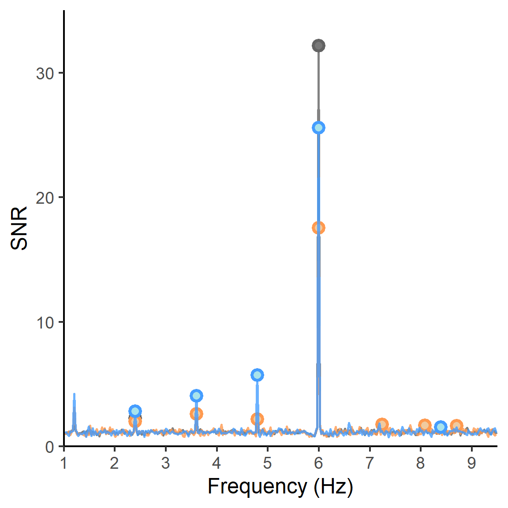
ggsave("./figures/SNR_max.png", bg = "transparent", dpi = 300)# Create data summary
ds_max_ROI_base_plot_prep = data_summary(ds_max_ROI_base_plot, varname = "bca", groupnames = c("ROI",
"emotion"))
# Plot Base response differences for emotions
base_bar_all = ggplot(ds_max_ROI_base_plot_prep, aes(x = emotion, y = bca, fill = ROI)) +
geom_bar(stat = "identity", color = "black", position = "dodge2", size = 1) +
geom_errorbar(aes(ymin = bca, ymax = bca + se), width = 0.1, size = 1, position = position_dodge(width = 0.9)) +
scale_fill_manual(values = c("#929394", "#D9DADB", "#474747")) + labs(x = "Emotion",
y = "BCA [uV]") + # ylim(0,2.3)+
theme_classic(base_size = 20) + theme(legend.position = "bottom")
# Draw topographies
# Subset for base
ds_max_topo_base = subset(ds_max_topo, manip == "base")
# Subset for emotions
ds_max_topo_base_hap = subset(ds_max_topo_base, emotion == "happy")
ds_max_topo_base_ang = subset(ds_max_topo_base, emotion == "angry")
# Add montage
ds_max_topo_base_hap = electrode_locations(ds_max_topo_base_hap, electrode = "electrode",
drop = FALSE, montage = NULL)
ds_max_topo_base_ang = electrode_locations(ds_max_topo_base_ang, electrode = "electrode",
drop = FALSE, montage = NULL)
topo_hap_base_all = ggplot(ds_max_topo_base_hap, aes(x = x, y = y, fill = amplitude,
label = electrode)) + ggtitle("happy") + geom_topo(grid_res = 300, interp_limit = "head",
chan_markers = "point", chan_size = 2, head_size = 1.5) + scale_fill_distiller(palette = "RdBu",
limits = c(0, 2.5)) + theme_void() + coord_equal() + labs(fill = expression(paste("BCA (",
mu, "V)"))) + theme(legend.position = "none")
topo_ang_base_all = ggplot(ds_max_topo_base_ang, aes(x = x, y = y, fill = amplitude,
label = electrode)) + ggtitle("angry") + geom_topo(grid_res = 300, interp_limit = "head",
chan_markers = "point", chan_size = 2, head_size = 1.5) + scale_fill_distiller(palette = "RdBu",
limits = c(0, 2.5)) + theme_void() + coord_equal() + labs(fill = expression(paste("BCA (",
mu, "V)"))) + theme(legend.position = "none")
# Get legend
topo_leg = ggplot(ds_max_topo_base_ang, aes(x = x, y = y, fill = amplitude, label = electrode)) +
ggtitle("angry") + geom_topo(grid_res = 300, interp_limit = "head", chan_markers = "point",
chan_size = 2, head_size = 1.5) + scale_fill_distiller(palette = "RdBu", limits = c(0,
2.5)) + theme_void() + coord_equal() + labs(fill = expression(paste("BCA (",
mu, "V)")))
topo_leg = get_legend(topo_leg)
# Explanation: draw_plot(plot, for position: x = 0, y = 0, width = 1, height = 1)
# Combine plots
ggdraw(xlim = c(0, 1), ylim = c(0, 2)) + draw_plot(base_bar_all, 0, -0.05, 0.5, 2) +
draw_plot(topo_hap_base_all, 0.4, 1.1, 0.7, 0.7) + draw_plot(topo_ang_base_all,
0.4, 0.3, 0.7, 0.7) + draw_plot(topo_leg, 0.43, 0.5, 1, 1)# Create data summary
ds_max_ROI_base_plot_group = data_summary(ds_max_ROI_base_plot, varname="bca", groupnames=c("group","ROI", "emotion"))
# Plot Base response differences for emotions
max_base_groups = ggplot(ds_max_ROI_base_plot_group, aes(x=emotion, y=bca, fill = ROI))+
geom_bar(stat="identity", color="black", position = "dodge2", size = 1)+
geom_errorbar(aes(ymin=bca, ymax=bca+se), width=.1, size =1, position = position_dodge(width = 0.9))+
scale_fill_manual(values=c('#929394','#D9DADB','#474747'))+
labs(x = "Emotion", y = "BCA [uV]" )+
# ylim(0,2.3)+
theme_classic(base_size = 20) +
theme(legend.position = "bottom",
panel.background = element_rect(fill = "transparent"),
plot.background = element_rect(fill = "transparent", color = NA),
legend.background = element_rect(fill = "transparent"), # get rid of legend bg
legend.box.background = element_rect(fill = "transparent"))+
facet_wrap(~group)
max_base_groups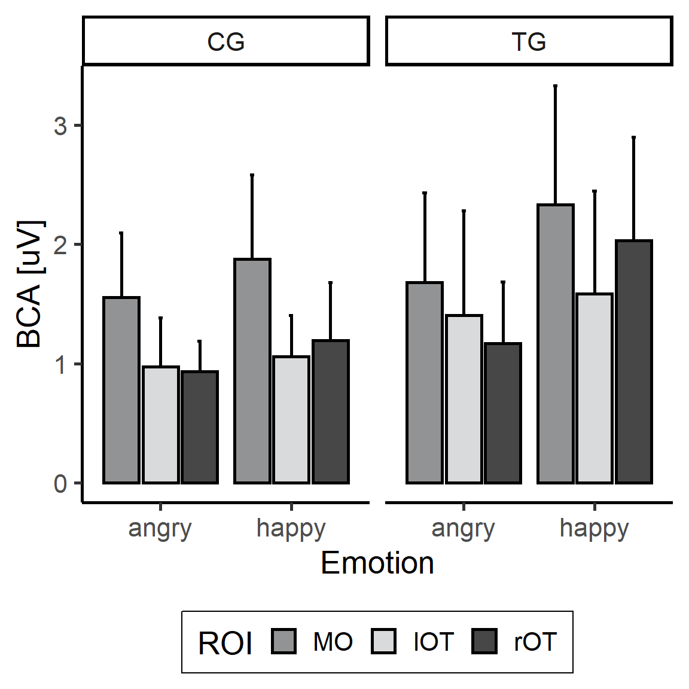
ggsave("./figures/max_base_groups.png", bg = "transparent", dpi = 300)# anova_max_base = aov(bca ~ (emotion*ROI) + Error(ID/(emotion*ROI)),
# data=ds_max_ROI_base_stats) an_max_base = anova_stats(anova_max_base, digits =
# 3) # Print only selected statistical parameters an_max_base =
# subset(an_max_base, select=c(term, df, statistic, p.value, partial.etasq))
# an_max_base = subset(an_max_base, is.na(p.value) == FALSE) kable(an_max_base)
# anova_max_base = aov(bca ~ group + (emotion*ROI) + Error(ID/(emotion*ROI)),
# data=ds_max_ROI_base_stats) an_max_base = anova_stats(anova_max_base, digits =
# 3) # Print only selected statistical parameters an_max_base =
# subset(an_max_base, select=c(term, df, statistic, p.value, partial.etasq))
# an_max_base = subset(an_max_base, is.na(p.value) == FALSE) kable(an_max_base)
library(afex)
library(pander)
max_base = aov_ez("ID", "bca", ds_max_ROI_base_stats, between = c("group"), within = c("emotion",
"ROI"), factorize = FALSE, anova_table = list(correction = "none", es = "pes"))
pander(max_base$anova_table)| num Df | den Df | MSE | F | pes | Pr(>F) | |
|---|---|---|---|---|---|---|
| group | 1 | 50 | 13.82 | 1.073 | 0.021 | 0.3053 |
| emotion | 1 | 50 | 1.097 | 11.03 | 0.1807 | 0.001681 |
| group:emotion | 1 | 50 | 1.097 | 2.114 | 0.04056 | 0.1522 |
| ROI | 2 | 100 | 2.885 | 3.901 | 0.07238 | 0.02336 |
| group:ROI | 2 | 100 | 2.885 | 0.1497 | 0.002985 | 0.8612 |
| emotion:ROI | 2 | 100 | 0.3645 | 3.75 | 0.06977 | 0.02688 |
| group:emotion:ROI | 2 | 100 | 0.3645 | 1.154 | 0.02256 | 0.3196 |
ds_max_ROI_base_stats_SNR = subset(ds_max_ROI_base_stats, SNR_ex == 1)
max_base_snr = aov_ez("ID", "bca", ds_max_ROI_base_stats_SNR, between = c("group"),
within = c("emotion", "ROI"), factorize = FALSE, anova_table = list(correction = "none",
es = "pes"))
pander(max_base_snr$anova_table)| num Df | den Df | MSE | F | pes | Pr(>F) | |
|---|---|---|---|---|---|---|
| group | 1 | 45 | 14.61 | 0.2343 | 0.005179 | 0.6307 |
| emotion | 1 | 45 | 1.198 | 10.49 | 0.1891 | 0.002257 |
| group:emotion | 1 | 45 | 1.198 | 1.208 | 0.02615 | 0.2775 |
| ROI | 2 | 90 | 3.157 | 4.058 | 0.08272 | 0.02054 |
| group:ROI | 2 | 90 | 3.157 | 0.3439 | 0.007585 | 0.7099 |
| emotion:ROI | 2 | 90 | 0.3987 | 3.702 | 0.07602 | 0.02849 |
| group:emotion:ROI | 2 | 90 | 0.3987 | 0.6723 | 0.01472 | 0.5131 |
# Create data summary
ds_max_ROI_odd_plot_prep = data_summary(ds_max_ROI_odd_plot, varname = "bca", groupnames = c("ROI",
"emotion"))
# Plot oddresponse differences for emotions
odd_bar_all = ggplot(ds_max_ROI_odd_plot_prep, aes(x = emotion, y = bca, fill = ROI)) +
geom_bar(stat = "identity", color = "black", position = "dodge2", size = 1) +
geom_errorbar(aes(ymin = bca, ymax = bca + se), width = 0.1, position = position_dodge(0.9),
size = 1) + labs(x = "Emotion", y = "BCA [uV]") + scale_fill_manual(values = c("#929394",
"#D9DADB", "#474747")) + # ylim(0,1.4)+
theme_classic(base_size = 20) + theme(legend.position = "bottom")
# Draw topographies
# Subset for odd
ds_max_topo_odd = subset(ds_max_topo, manip == "odd")
# Subset for emotions
ds_max_topo_odd_hap = subset(ds_max_topo_odd, emotion == "happy")
ds_max_topo_odd_ang = subset(ds_max_topo_odd, emotion == "angry")
# Add montage
ds_max_topo_odd_hap = electrode_locations(ds_max_topo_odd_hap, electrode = "electrode",
drop = FALSE, montage = NULL)
ds_max_topo_odd_ang = electrode_locations(ds_max_topo_odd_ang, electrode = "electrode",
drop = FALSE, montage = NULL)
# Draw topographies
topo_hap_odd_all = ggplot(ds_max_topo_odd_hap, aes(x = x, y = y, fill = amplitude,
label = electrode)) + ggtitle("happy") + geom_topo(grid_res = 300, interp_limit = "head",
chan_markers = "point", chan_size = 2, head_size = 1.5) + scale_fill_distiller(palette = "RdBu",
limits = c(0, 5)) + theme_void() + coord_equal() + labs(fill = expression(paste("BCA (",
mu, "V)"))) + theme(legend.position = "none")
topo_ang_odd_all = ggplot(ds_max_topo_odd_ang, aes(x = x, y = y, fill = amplitude,
label = electrode)) + ggtitle("angry") + geom_topo(grid_res = 300, interp_limit = "head",
chan_markers = "point", chan_size = 2, head_size = 1.5) + scale_fill_distiller(palette = "RdBu",
limits = c(0, 5)) + theme_void() + coord_equal() + labs(fill = expression(paste("BCA (",
mu, "V)"))) + theme(legend.position = "none")
# Get legend
topo_leg = ggplot(ds_max_topo_odd_ang, aes(x = x, y = y, fill = amplitude, label = electrode)) +
ggtitle("angry") + geom_topo(grid_res = 300, interp_limit = "head", chan_markers = "point",
chan_size = 2, head_size = 1.5) + scale_fill_distiller(palette = "RdBu", limits = c(0,
5)) + theme_void() + coord_equal() + labs(fill = expression(paste("BCA (", mu,
"V)")))
topo_leg = get_legend(topo_leg)
# Explanation: draw_plot(plot, for position: x = 0, y = 0, width = 1, height = 1)
# Combine plots
ggdraw(xlim = c(0, 1), ylim = c(0, 2)) + draw_plot(odd_bar_all, 0, -0.05, 0.5, 2) +
draw_plot(topo_hap_odd_all, 0.4, 1.1, 0.7, 0.7) + draw_plot(topo_ang_odd_all,
0.4, 0.3, 0.7, 0.7) + draw_plot(topo_leg, 0.43, 0.5, 1, 1)# Create data summary
ds_max_ROI_odd_plot_prep = data_summary(ds_max_ROI_odd_plot, varname="bca", groupnames=c("group","ROI", "emotion"))
# Plot odd response differences for emotions
max_odd_groups = ggplot(ds_max_ROI_odd_plot_prep, aes(x=emotion, y=bca, fill=ROI)) +
geom_bar(stat="identity", color="black", position = "dodge2", size = 1)+
geom_errorbar(aes(ymin=bca, ymax=bca+se), width=.1, position=position_dodge(0.9), size = 1)+
labs(x = "Emotion", y = "BCA [uV]" )+
scale_fill_manual(values=c('#929394','#D9DADB','#474747'))+
# ylim(0,1.4)+
theme_classic(base_size = 20)+
theme(legend.position = "bottom",
panel.background = element_rect(fill = "transparent"),
plot.background = element_rect(fill = "transparent", color = NA),
legend.background = element_rect(fill = "transparent"), # get rid of legend bg
legend.box.background = element_rect(fill = "transparent"))+
facet_wrap(~group)
max_odd_groups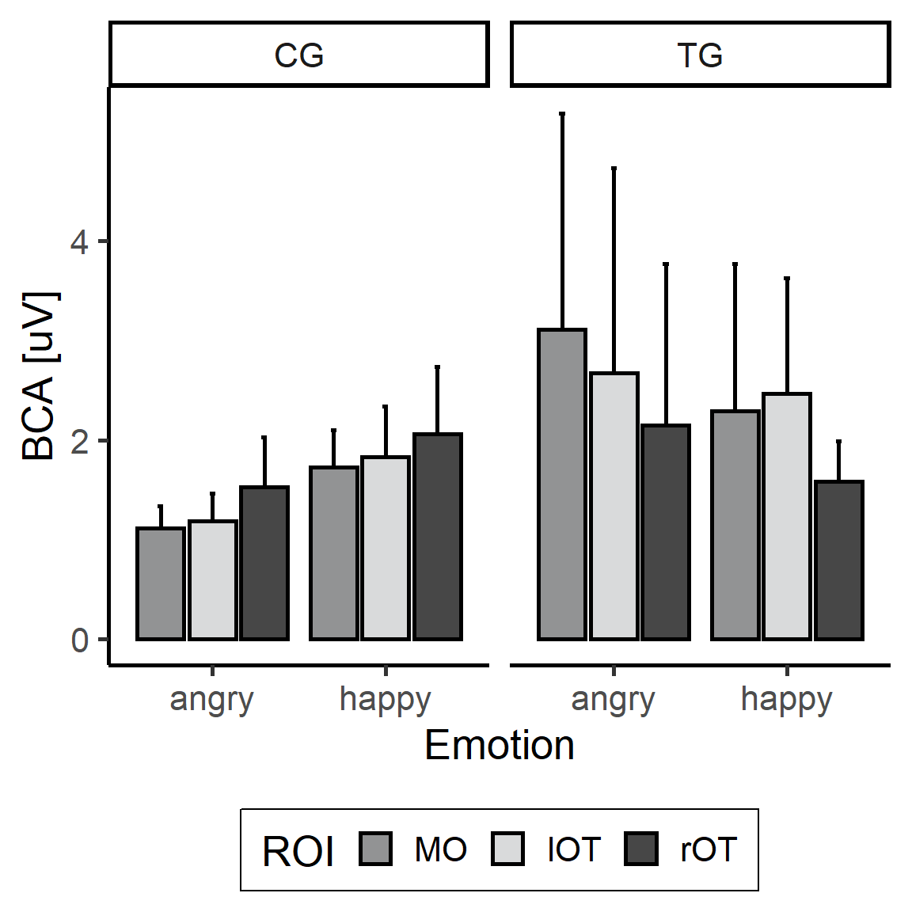
ggsave("./figures/max_odd_groups.png", bg = "transparent", dpi = 300) # anova_max_odd = aov(bca ~ (emotion*ROI) + Error(ID/(emotion*ROI)),
# data=ds_max_ROI_odd_stats) an_max_odd = anova_stats(anova_max_odd, digits = 3)
# # Print only selected statistical parameters an_max_odd = subset(an_max_odd,
# select=c(term, df, statistic, p.value, partial.etasq)) an_max_odd =
# subset(an_max_odd, is.na(p.value) == FALSE) kable(an_max_odd) anova_max_odd =
# aov(bca ~ group + (emotion*ROI) + Error(ID/(emotion*ROI)),
# data=ds_max_ROI_odd_stats) an_max_odd = anova_stats(anova_max_odd, digits = 3)
# Print only selected statistical parameters an_max_odd = subset(an_max_odd,
# select=c(term, df, statistic, p.value, partial.etasq)) an_max_odd =
# subset(an_max_odd, is.na(p.value) == FALSE) kable(an_max_odd)
max_odd = aov_ez("ID", "bca", ds_max_ROI_odd_stats, between = c("group"), within = c("emotion",
"ROI"), factorize = FALSE, anova_table = list(correction = "none", es = "pes"))
pander(max_odd$anova_table)| num Df | den Df | MSE | F | pes | Pr(>F) | |
|---|---|---|---|---|---|---|
| group | 1 | 50 | 31.2 | 1.61 | 0.03119 | 0.2104 |
| emotion | 1 | 50 | 13.89 | 0.005614 | 0.0001123 | 0.9406 |
| group:emotion | 1 | 50 | 13.89 | 1.776 | 0.0343 | 0.1887 |
| ROI | 2 | 100 | 6.036 | 0.272 | 0.00541 | 0.7624 |
| group:ROI | 2 | 100 | 6.036 | 1.781 | 0.0344 | 0.1738 |
| emotion:ROI | 2 | 100 | 3.241 | 0.2201 | 0.004383 | 0.8028 |
| group:emotion:ROI | 2 | 100 | 3.241 | 0.1753 | 0.003494 | 0.8394 |
ds_max_ROI_odd_stats_SNR = subset(ds_max_ROI_odd_stats, SNR_ex == 1)
max_odd_snr = aov_ez("ID", "bca", ds_max_ROI_odd_stats_SNR, between = c("group"),
within = c("emotion", "ROI"), factorize = FALSE, anova_table = list(correction = "none",
es = "pes"))
pander(max_odd_snr$anova_table)| num Df | den Df | MSE | F | pes | Pr(>F) | |
|---|---|---|---|---|---|---|
| group | 1 | 45 | 34.44 | 1.174 | 0.02543 | 0.2843 |
| emotion | 1 | 45 | 15.37 | 0.02406 | 0.0005343 | 0.8774 |
| group:emotion | 1 | 45 | 15.37 | 1.665 | 0.03567 | 0.2036 |
| ROI | 2 | 90 | 6.586 | 0.1901 | 0.004206 | 0.8272 |
| group:ROI | 2 | 90 | 6.586 | 1.582 | 0.03396 | 0.2112 |
| emotion:ROI | 2 | 90 | 3.592 | 0.1856 | 0.004107 | 0.8309 |
| group:emotion:ROI | 2 | 90 | 3.592 | 0.1447 | 0.003204 | 0.8655 |
# Convert ID, group & emotion into factor variables
ds_max_ROI_base_lmm = ds_max_ROI_base_stats %>%
convert_as_factor(ID)
ds_max_ROI_base_lmm$emotion = factor(ds_max_ROI_base_lmm$emotion, levels = c("happy",
"angry"))
ds_max_ROI_base_lmm$group = factor(ds_max_ROI_base_lmm$group, levels = c("TG", "CG"))
# Define contrasts for emotion / group
contrasts(ds_max_ROI_base_lmm$emotion) = contr.treatment(2)
contrasts(ds_max_ROI_base_lmm$group) = contr.treatment(2)
# Define treatment contrast for ROI
ds_max_ROI_base_lmm$ROI = factor(ds_max_ROI_base_lmm$ROI, levels = c("rOT", "lOT",
"MO"))
contrasts(ds_max_ROI_base_lmm$ROI) = contr.treatment(3, base = 3)
# Build full model with new names
mod_base_lmer = lmer(bca ~ group * emotion + ROI + (1 | ID), data = ds_max_ROI_base_lmm,
control = lmerControl(calc.derivs = FALSE), REML = FALSE)
labels = c("Intercept", "TG vs. CG", "Happy vs. Angry", "MO vs. rOT", "MO vs. lOT",
"Group x Emotion")
tab_model(mod_base_lmer, pred.labels = labels)| bca | |||
|---|---|---|---|
| Predictors | Estimates | CI | p |
| Intercept | 2.36 | 1.72 – 3.01 | <0.001 |
| TG vs. CG | -0.61 | -1.46 – 0.24 | 0.162 |
| Happy vs. Angry | -0.57 | -0.96 – -0.18 | 0.004 |
| MO vs. rOT | -0.53 | -0.86 – -0.20 | 0.002 |
| MO vs. lOT | -0.61 | -0.94 – -0.28 | <0.001 |
| Group x Emotion | 0.35 | -0.19 – 0.89 | 0.210 |
| Random Effects | |||
| σ2 | 1.48 | ||
| τ00 ID | 1.97 | ||
| ICC | 0.57 | ||
| N ID | 52 | ||
| Observations | 312 | ||
| Marginal R2 / Conditional R2 | 0.046 / 0.591 | ||
plot_model(mod_base_lmer, type = "pred", terms = c("emotion"))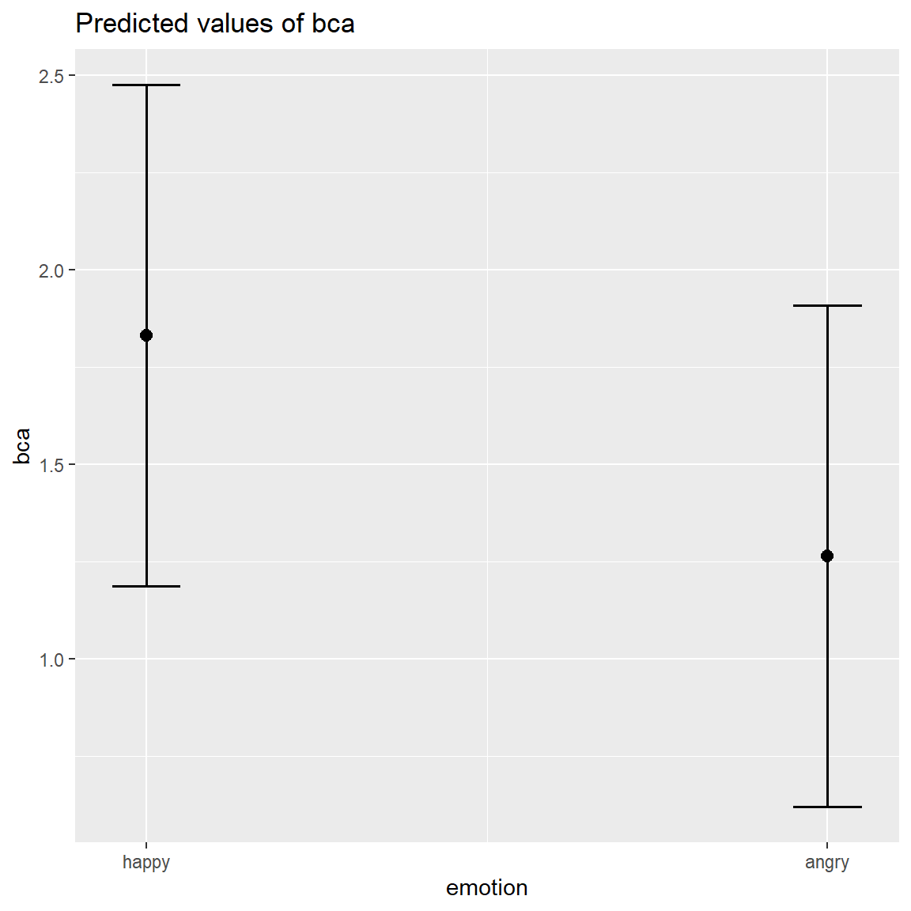
plot_model(mod_base_lmer, type = "pred", terms = c("ROI"))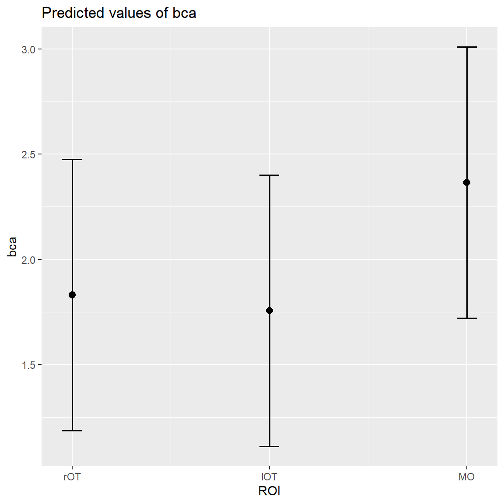
# Convert ID, group & emotion into factor variables
ds_max_ROI_base_lmm = ds_max_ROI_base_stats %>%
convert_as_factor(ID)
ds_max_ROI_base_lmm$emotion = factor(ds_max_ROI_base_lmm$emotion, levels = c("happy",
"angry"))
ds_max_ROI_base_lmm$group = factor(ds_max_ROI_base_lmm$group, levels = c("TG", "CG"))
# Define contrasts for emotion / group
contrasts(ds_max_ROI_base_lmm$emotion) = contr.treatment(2)
contrasts(ds_max_ROI_base_lmm$group) = contr.treatment(2)
# Define treatment contrast for ROI
ds_max_ROI_base_lmm$ROI = factor(ds_max_ROI_base_lmm$ROI, levels = c("rOT", "lOT",
"MO"))
contrasts(ds_max_ROI_base_lmm$ROI) = contr.treatment(3, base = 3)
# Build full model with new names
mod_base_lmer = lmer(bca ~ SRS + group * emotion + ROI + (1 | ID), data = ds_max_ROI_base_lmm,
control = lmerControl(calc.derivs = FALSE), REML = FALSE)
labels = c("SRS", "CG vs. TG", "Happy vs. Angry", "rOT vs. MO", "lOT vs. MO", "Group x Emotion")
tab_model(mod_base_lmer, pred.labels = labels, show.intercept = FALSE)| bca | |||
|---|---|---|---|
| Predictors | Estimates | CI | p |
| SRS | -0.01 | -0.04 – 0.01 | 0.311 |
| CG vs. TG | -0.54 | -1.40 – 0.31 | 0.215 |
| Happy vs. Angry | -0.57 | -0.96 – -0.18 | 0.004 |
| rOT vs. MO | -0.53 | -0.86 – -0.20 | 0.002 |
| lOT vs. MO | -0.61 | -0.94 – -0.28 | <0.001 |
| Group x Emotion | 0.35 | -0.19 – 0.89 | 0.210 |
| Random Effects | |||
| σ2 | 1.48 | ||
| τ00 ID | 1.93 | ||
| ICC | 0.57 | ||
| N ID | 52 | ||
| Observations | 312 | ||
| Marginal R2 / Conditional R2 | 0.058 / 0.591 | ||
# plot_model(mod_base_lmer, type = 'pred', terms = c('emotion'))
# plot_model(mod_base_lmer, type = 'pred', terms = c('ROI'))# Convert ID, group & emotion into factor variables
ds_max_ROI_odd_lmm = ds_max_ROI_odd_stats %>%
convert_as_factor(ID)
ds_max_ROI_odd_lmm$emotion = factor(ds_max_ROI_odd_lmm$emotion, levels = c("happy",
"angry"))
ds_max_ROI_odd_lmm$group = factor(ds_max_ROI_odd_lmm$group, levels = c("TG", "CG"))
# Define contrasts for emotion / group
contrasts(ds_max_ROI_odd_lmm$emotion) = contr.treatment(2)
contrasts(ds_max_ROI_odd_lmm$group) = contr.treatment(2)
# Define treatment contrast for ROI
ds_max_ROI_odd_lmm$ROI = factor(ds_max_ROI_odd_lmm$ROI, levels = c("rOT", "lOT",
"MO"))
contrasts(ds_max_ROI_odd_lmm$ROI) = contr.treatment(3, base = 3)
# Build full model with new names
mod_odd_lmer = lmer(bca ~ group * emotion + ROI + (1 | ID), data = ds_max_ROI_odd_lmm,
control = lmerControl(calc.derivs = FALSE), REML = FALSE)
labels = c("Intercept", "TG vs. CG", "Happy vs. Angry", "MO vs. rOT", "MO vs. lOT",
"Group x Emotion")
tab_model(mod_odd_lmer, pred.labels = labels)| bca | |||
|---|---|---|---|
| Predictors | Estimates | CI | p |
| Intercept | 2.19 | 1.14 – 3.23 | <0.001 |
| TG vs. CG | -0.24 | -1.58 – 1.10 | 0.725 |
| Happy vs. Angry | 0.53 | -0.27 – 1.34 | 0.196 |
| MO vs. rOT | -0.20 | -0.89 – 0.48 | 0.558 |
| MO vs. lOT | -0.02 | -0.70 – 0.67 | 0.960 |
| Group x Emotion | -1.13 | -2.24 – -0.01 | 0.048 |
| Random Effects | |||
| σ2 | 6.33 | ||
| τ00 ID | 3.94 | ||
| ICC | 0.38 | ||
| N ID | 52 | ||
| Observations | 312 | ||
| Marginal R2 / Conditional R2 | 0.024 / 0.398 | ||
plot_model(mod_odd_lmer, type = "pred", terms = c("group", "emotion"))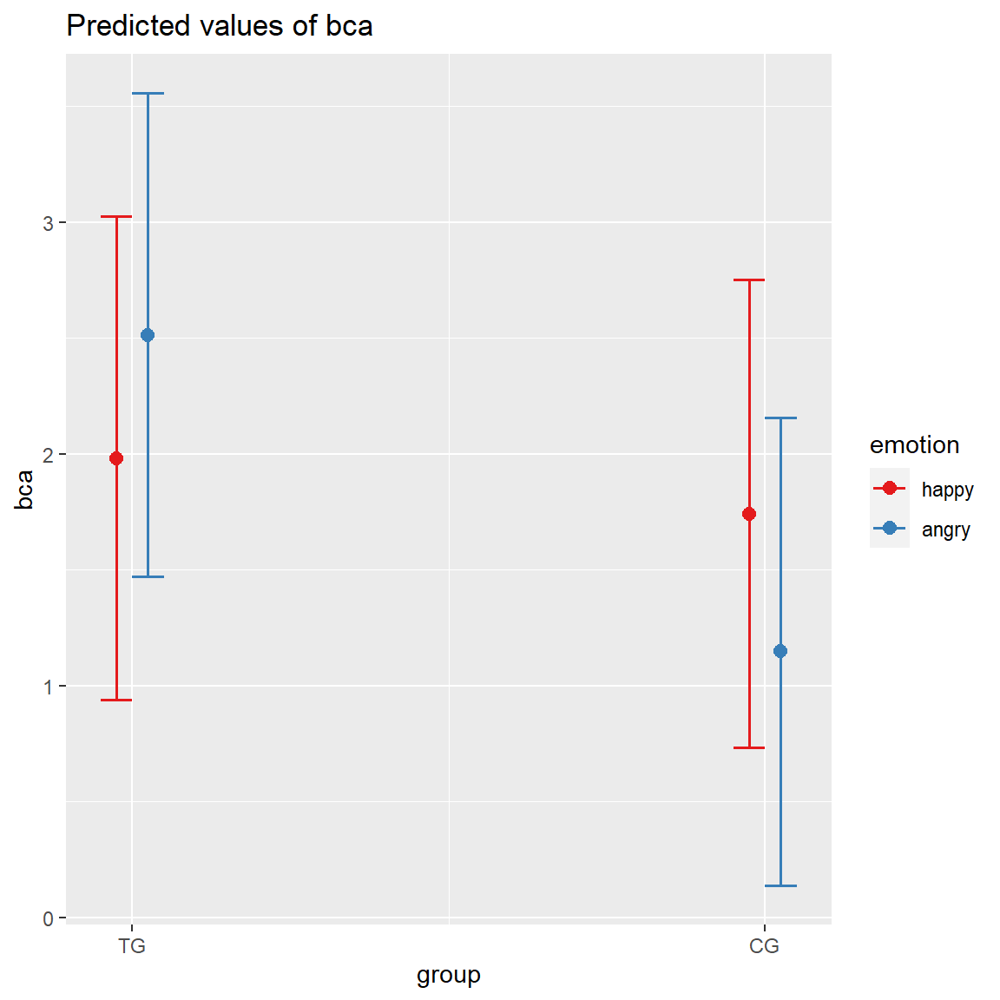
ds_max_ROI_odd_lmm$interaction = interaction(ds_max_ROI_odd_lmm$group, ds_max_ROI_odd_lmm$emotion)
mod_odd_ph = lmer(bca ~ interaction + ROI + (1 | ID), data = ds_max_ROI_odd_lmm,
control = lmerControl(calc.derivs = FALSE))
library(multcomp)
# Select contrasts of interest
mod_odd_posthoc = summary(glht(mod_odd_ph, linfct = mcp(interaction = "Tukey")))
mod_odd_posthoc = summary(glht(mod_odd_ph, linfct = mcp(interaction = c("CG.angry - TG.angry = 0",
"CG.angry - TG.happy = 0", "CG.happy - TG.happy = 0", "TG.angry - CG.happy = 0")),
test = adjusted(type = "fdr")))
# Get ready for presentation in RMarkdown
tab1 = merge(as.data.frame(mod_odd_posthoc$test$coefficients), as.data.frame(mod_odd_posthoc$test$sigma),
by = 0)
tab2 = as.data.frame(mod_odd_posthoc$test$pvalues)
rownames(tab2) = rownames(as.data.frame(mod_odd_posthoc$test$tstat))
tab2 = merge(as.data.frame(mod_odd_posthoc$test$tstat), tab2, by = 0)
mod_odd_ph_test = merge(tab1, tab2, by = "Row.names")
colnames(mod_odd_ph_test) = c("Contrast", "Est.", "Std. Error", "z value", "p value")
# Create table
kable(mod_odd_ph_test) %>%
kable_styling(bootstrap_options = c("hover"), font_size = 14, fixed_thead = T)# Convert ID, group & emotion into factor variables
ds_max_ROI_odd_lmm = ds_max_ROI_odd_stats %>%
convert_as_factor(ID)
ds_max_ROI_odd_lmm$emotion = factor(ds_max_ROI_odd_lmm$emotion, levels = c("happy",
"angry"))
ds_max_ROI_odd_lmm$group = factor(ds_max_ROI_odd_lmm$group, levels = c("TG", "CG"))
# Define contrasts for emotion / group
contrasts(ds_max_ROI_odd_lmm$emotion) = contr.treatment(2)
contrasts(ds_max_ROI_odd_lmm$group) = contr.treatment(2)
# Define treatment contrast for ROI
ds_max_ROI_odd_lmm$ROI = factor(ds_max_ROI_odd_lmm$ROI, levels = c("rOT", "lOT",
"MO"))
contrasts(ds_max_ROI_odd_lmm$ROI) = contr.treatment(3, base = 3)
# Build full model with new names
mod_odd_lmer = lmer(bca ~ SRS + group * emotion + ROI + (1 | ID), data = ds_max_ROI_odd_lmm,
control = lmerControl(calc.derivs = FALSE), REML = FALSE)
labels = c("SRS", "CG vs. TG", "Happy vs. Angry", "rOT vs. MO", "lOT vs. MO", "Group x Emotion")
tab_model(mod_odd_lmer, pred.labels = labels, show.intercept = FALSE)| bca | |||
|---|---|---|---|
| Predictors | Estimates | CI | p |
| SRS | -0.01 | -0.05 – 0.03 | 0.581 |
| CG vs. TG | -0.18 | -1.53 – 1.17 | 0.789 |
| Happy vs. Angry | 0.53 | -0.27 – 1.34 | 0.196 |
| rOT vs. MO | -0.20 | -0.89 – 0.48 | 0.558 |
| lOT vs. MO | -0.02 | -0.70 – 0.67 | 0.960 |
| Group x Emotion | -1.13 | -2.24 – -0.01 | 0.048 |
| Random Effects | |||
| σ2 | 6.33 | ||
| τ00 ID | 3.92 | ||
| ICC | 0.38 | ||
| N ID | 52 | ||
| Observations | 312 | ||
| Marginal R2 / Conditional R2 | 0.027 / 0.398 | ||
# plot_model(mod_odd_lmer, type = 'pred', terms = c('emotion'))
# plot_model(mod_odd_lmer, type = 'pred', terms = c('ROI'))library(corrplot)
# Average across ROIs
odd_cor_prep = aggregate(ds_max_ROI_base_stats, by = list(ds_max_ROI_base_stats$ID,
ds_max_ROI_base_stats$emotion, ds_max_ROI_base_stats$group), FUN = mean)
# De-select variables
odd_cor_prep = subset(odd_cor_prep, select = -c(ID, emotion, ROI, group, sex, SNR_ex))
# Across participants - BCA happy
odd_hap_prep = subset(odd_cor_prep, Group.2 == "happy")
odd_hap_prep = subset(odd_hap_prep, select = -c(Group.1, Group.2, Group.3))
odd_hap = cor(odd_hap_prep)
corrplot(odd_hap, method = "circle", type = "lower", tl.col = "black")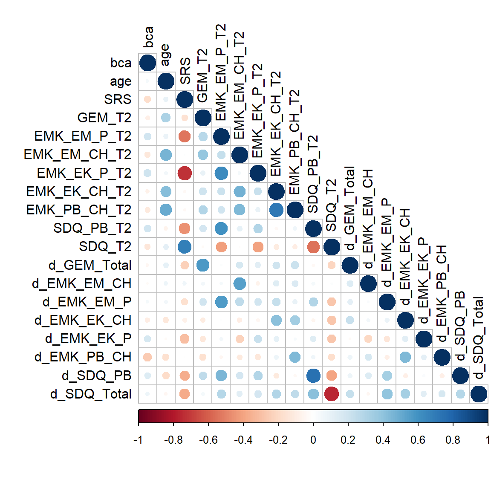
# Across participants - BCA angry
odd_ang_prep = subset(odd_cor_prep, Group.2 == "angry")
odd_ang_prep = subset(odd_ang_prep, select = -c(Group.1, Group.2, Group.3))
odd_hap = cor(odd_ang_prep)
corrplot(odd_hap, method = "circle", type = "lower", tl.col = "black")library(psych)
# TG participants - BCA happy
odd_hap_prep_TG = subset(odd_cor_prep, Group.2 == "happy" & Group.3 == "TG")
odd_hap_prep_TG = subset(odd_hap_prep_TG, select = -c(Group.1, Group.2, Group.3))
odd_hap_TG = cor(odd_hap_prep_TG)
corrplot(odd_hap_TG, method = "circle", type = "lower", tl.col = "black")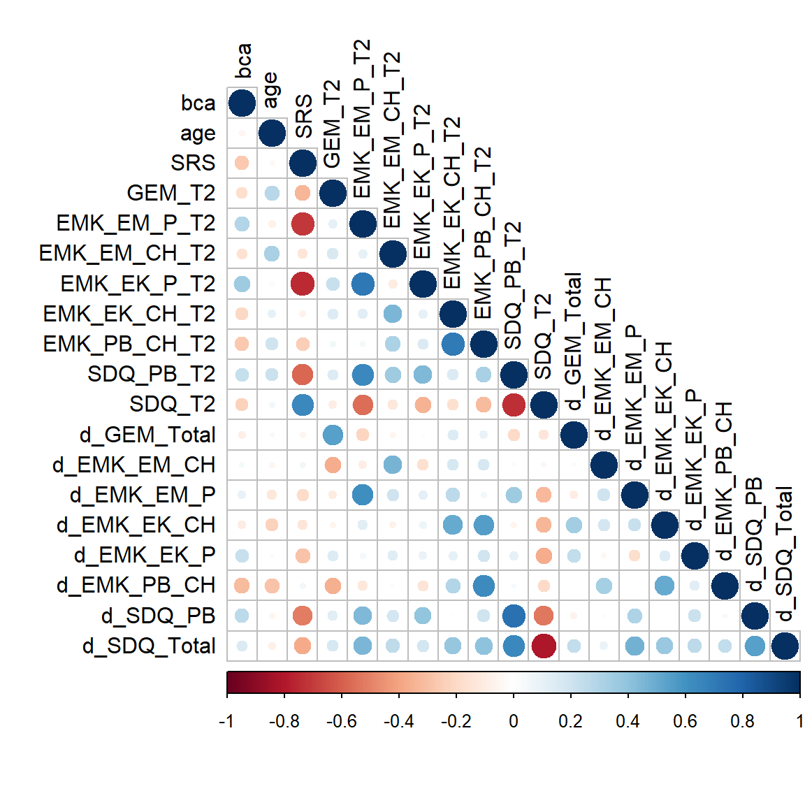
# Single correlations
corr.test(odd_hap_prep_TG$bca, odd_hap_prep_TG$GEM_T2, use = "pairwise", method = "pearson",
alpha = 0.05)Call:corr.test(x = odd_hap_prep_TG\(bca, y = odd_hap_prep_TG\)GEM_T2, use = “pairwise”, method = “pearson”, alpha = 0.05) Correlation matrix [1] -0.18 Sample Size [1] 25 Probability values adjusted for multiple tests. [1] 0.39
To see confidence intervals of the correlations, print with the short=FALSE option
corr.test(odd_hap_prep_TG$bca, odd_hap_prep_TG$EMK_EM_P_T2, use = "pairwise", method = "pearson",
alpha = 0.05)Call:corr.test(x = odd_hap_prep_TG\(bca, y = odd_hap_prep_TG\)EMK_EM_P_T2, use = “pairwise”, method = “pearson”, alpha = 0.05) Correlation matrix [1] 0.29 Sample Size [1] 25 Probability values adjusted for multiple tests. [1] 0.16
To see confidence intervals of the correlations, print with the short=FALSE option
corr.test(odd_hap_prep_TG$bca, odd_hap_prep_TG$EMK_EM_CH_T2, use = "pairwise", method = "pearson",
alpha = 0.05)Call:corr.test(x = odd_hap_prep_TG\(bca, y = odd_hap_prep_TG\)EMK_EM_CH_T2, use = “pairwise”, method = “pearson”, alpha = 0.05) Correlation matrix [1] -0.16 Sample Size [1] 25 Probability values adjusted for multiple tests. [1] 0.45
To see confidence intervals of the correlations, print with the short=FALSE option
corr.test(odd_hap_prep_TG$bca, odd_hap_prep_TG$EMK_EK_P_T2, use = "pairwise", method = "pearson",
alpha = 0.05)Call:corr.test(x = odd_hap_prep_TG\(bca, y = odd_hap_prep_TG\)EMK_EK_P_T2, use = “pairwise”, method = “pearson”, alpha = 0.05) Correlation matrix [1] 0.35 Sample Size [1] 25 Probability values adjusted for multiple tests. [1] 0.08
To see confidence intervals of the correlations, print with the short=FALSE option
corr.test(odd_hap_prep_TG$bca, odd_hap_prep_TG$EMK_EK_CH_T2, use = "pairwise", method = "pearson",
alpha = 0.05)Call:corr.test(x = odd_hap_prep_TG\(bca, y = odd_hap_prep_TG\)EMK_EK_CH_T2, use = “pairwise”, method = “pearson”, alpha = 0.05) Correlation matrix [1] -0.2 Sample Size [1] 25 Probability values adjusted for multiple tests. [1] 0.33
To see confidence intervals of the correlations, print with the short=FALSE option
# CG participants - BCA happy
odd_hap_prep_CG = subset(odd_cor_prep, Group.2 == "happy" & Group.3 == "CG")
odd_hap_prep_CG = subset(odd_hap_prep_CG, select = -c(Group.1, Group.2, Group.3))
odd_hap_CG = cor(odd_hap_prep_CG)
corrplot(odd_hap_CG, method = "circle", type = "lower", tl.col = "black")# TG participants - BCA angry
odd_ang_prep_TG = subset(odd_cor_prep, Group.2 == "angry" & Group.3 == "TG")
odd_ang_prep_TG = subset(odd_ang_prep_TG, select = -c(Group.1, Group.2, Group.3))
odd_ang_TG = cor(odd_ang_prep_TG)
corrplot(odd_ang_TG, method = "circle", type = "lower", tl.col = "black")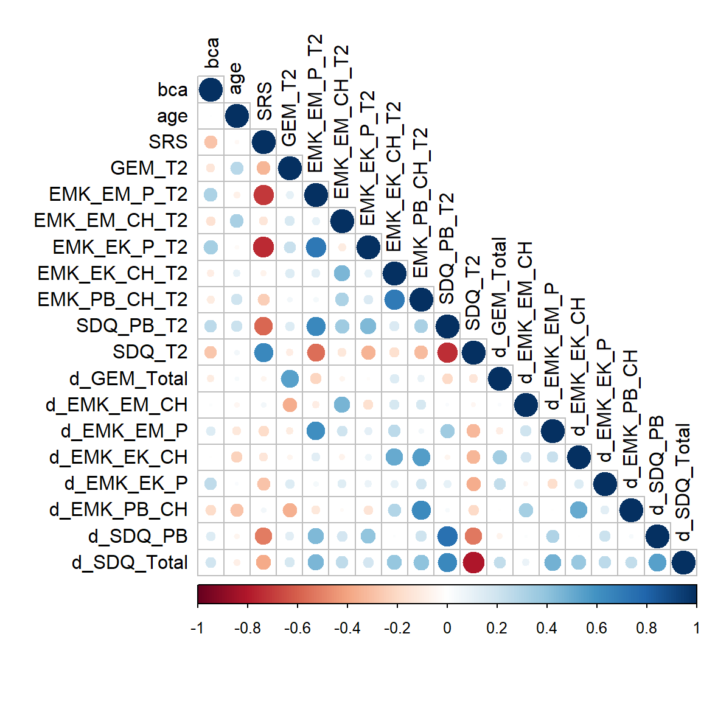
# Single correlations
corr.test(odd_ang_prep_TG$bca, odd_ang_prep_TG$GEM_T2, use = "pairwise", method = "pearson",
alpha = 0.05)Call:corr.test(x = odd_ang_prep_TG\(bca, y = odd_ang_prep_TG\)GEM_T2, use = “pairwise”, method = “pearson”, alpha = 0.05) Correlation matrix [1] -0.13 Sample Size [1] 25 Probability values adjusted for multiple tests. [1] 0.53
To see confidence intervals of the correlations, print with the short=FALSE option
corr.test(odd_ang_prep_TG$bca, odd_ang_prep_TG$EMK_EM_P_T2, use = "pairwise", method = "pearson",
alpha = 0.05)Call:corr.test(x = odd_ang_prep_TG\(bca, y = odd_ang_prep_TG\)EMK_EM_P_T2, use = “pairwise”, method = “pearson”, alpha = 0.05) Correlation matrix [1] 0.32 Sample Size [1] 25 Probability values adjusted for multiple tests. [1] 0.12
To see confidence intervals of the correlations, print with the short=FALSE option
corr.test(odd_ang_prep_TG$bca, odd_ang_prep_TG$EMK_EM_CH_T2, use = "pairwise", method = "pearson",
alpha = 0.05)Call:corr.test(x = odd_ang_prep_TG\(bca, y = odd_ang_prep_TG\)EMK_EM_CH_T2, use = “pairwise”, method = “pearson”, alpha = 0.05) Correlation matrix [1] -0.15 Sample Size [1] 25 Probability values adjusted for multiple tests. [1] 0.47
To see confidence intervals of the correlations, print with the short=FALSE option
corr.test(odd_ang_prep_TG$bca, odd_ang_prep_TG$EMK_EK_P_T2, use = "pairwise", method = "pearson",
alpha = 0.05)Call:corr.test(x = odd_ang_prep_TG\(bca, y = odd_ang_prep_TG\)EMK_EK_P_T2, use = “pairwise”, method = “pearson”, alpha = 0.05) Correlation matrix [1] 0.34 Sample Size [1] 25 Probability values adjusted for multiple tests. [1] 0.1
To see confidence intervals of the correlations, print with the short=FALSE option
corr.test(odd_ang_prep_TG$bca, odd_ang_prep_TG$EMK_EK_CH_T2, use = "pairwise", method = "pearson",
alpha = 0.05)Call:corr.test(x = odd_ang_prep_TG\(bca, y = odd_ang_prep_TG\)EMK_EK_CH_T2, use = “pairwise”, method = “pearson”, alpha = 0.05) Correlation matrix [1] -0.1 Sample Size [1] 25 Probability values adjusted for multiple tests. [1] 0.65
To see confidence intervals of the correlations, print with the short=FALSE option
# CG participants - BCA angry
odd_ang_prep_CG = subset(odd_cor_prep, Group.2 == "angry" & Group.3 == "CG")
odd_ang_prep_CG = subset(odd_ang_prep_CG, select = -c(Group.1, Group.2, Group.3))
odd_ang_CG = cor(odd_ang_prep_CG)
corrplot(odd_ang_CG, method = "circle", type = "lower", tl.col = "black")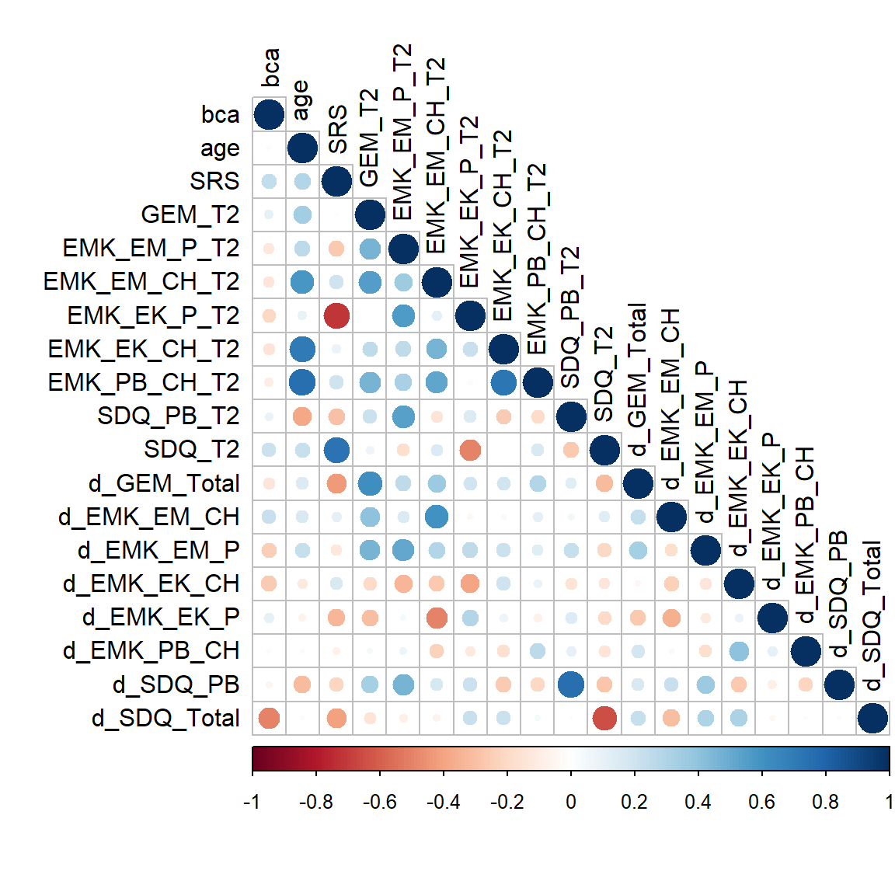
# Load data
hap_traj = read.delim("./data/max_hap_erp_traj.txt", header = TRUE, sep = " ", dec = ".")
ang_traj = read.delim("./data/max_ang_erp_traj.txt", header = TRUE, sep = " ", dec = ".")
# Add emotion condition
hap_traj$emotion = "happy"
ang_traj$emotion = "angry"
# Combine data sets
max_traj = rbind(hap_traj,ang_traj)
# Select lOT electrodes and average across electrodes
max_traj_lOT = subset(max_traj, select=c(ID, time, emotion, PO3, PO7, PO9))
max_traj_lOT_av = data.frame(ID=max_traj_lOT[,1], time=max_traj_lOT[,2],
emotion=max_traj_lOT[,3], Means=rowMeans(max_traj_lOT[,4:6]))
max_traj_lOT_av$group = qn_data$group[match(max_traj_lOT_av$ID,qn_data$ID,nomatch = NA)]
# Plot data
max_lOT = ggplot(max_traj_lOT_av, aes(time, Means))+
ggtitle("lOT") +
theme(panel.background = element_blank(), panel.border = element_rect(colour = "grey", fill=NA, size=2),
axis.title.y = element_text(margin = margin(t = 0, r = 20, b = 0, l = 0)), legend.text=element_text(size=7),
legend.key = element_rect(fill = "white"))+
stat_summary(fun.y = mean, geom = "line", size = 1.2, linetype = "solid", aes(colour= emotion))+
scale_color_discrete(guide = guide_legend(override.aes = list(color = "white")))+
scale_colour_manual(values = FPVS_col)+
#theme(axis.title.x=element_blank())+ # to turn of x-axis title
#theme(axis.title.y=element_blank())+ # to turn of y-axis title
#theme(text=element_text(family="Coves", face="bold", size=18))+
labs(x = "\nTime (ms)",y = expression(paste("Amplitude [",mu,"V]")),colour = "")+
coord_cartesian(ylim=c(-2, 4),xlim=c(-100,600)) +
scale_y_continuous(breaks=seq(-2, 4, 1))+
scale_x_continuous(breaks=seq(-200,600,200))+
geom_vline(xintercept = 0, linetype = "dashed",colour="grey" )+
geom_hline(yintercept = 0, linetype = "dashed",colour="grey")+
theme_classic(base_size = 15)+
theme(legend.position ="bottom", panel.background = element_rect(fill = "transparent"),
plot.background = element_rect(fill = "transparent", color = NA),
legend.background = element_rect(fill = "transparent"), # get rid of legend bg
legend.box.background = element_rect(fill = "transparent"))+
facet_grid(~group)
# Select rOT electrodes and average across electrodes
max_traj_rOT = subset(max_traj, select=c(ID, time, emotion, PO4, PO8, PO10))
max_traj_rOT_av = data.frame(ID=max_traj_rOT[,1], time=max_traj_rOT[,2],
emotion=max_traj_rOT[,3], Means=rowMeans(max_traj_rOT[,4:6]))
max_traj_rOT_av$group = qn_data$group[match(max_traj_rOT_av$ID,qn_data$ID,nomatch = NA)]
# Plot data
max_rOT = ggplot(max_traj_rOT_av,aes(time,Means))+
ggtitle("rOT") +
theme(panel.background = element_blank(), panel.border = element_rect(colour = "grey", fill=NA, size=2),
axis.title.y = element_text(margin = margin(t = 0, r = 20, b = 0, l = 0)), legend.text=element_text(size=7),
legend.key = element_rect(fill = "white"))+
stat_summary(fun.y = mean, geom = "line", size = 1.2, linetype = "solid", aes(colour= emotion))+
scale_color_discrete(guide = guide_legend(override.aes = list(color = "white")))+
scale_colour_manual(values = FPVS_col) +
#theme(axis.title.x=element_blank())+ # to turn of x-axis title
#theme(axis.title.y=element_blank())+ # to turn of y-axis title
#theme(text=element_text(family="Coves", face="bold", size=18))+
labs(x = "\nTime (ms)",y = expression(paste("Amplitude [",mu,"V]")),colour = "")+
coord_cartesian(ylim=c(-2, 4),xlim=c(-100,600)) +
scale_y_continuous(breaks=seq(-2, 4, 1))+
scale_x_continuous(breaks=seq(-200,600,200))+
geom_vline(xintercept = 0, linetype = "dashed",colour="grey" )+
geom_hline(yintercept = 0, linetype = "dashed",colour="grey")+
theme_classic(base_size = 15)+
theme(legend.position = "bottom", panel.background = element_rect(fill = "transparent"),
plot.background = element_rect(fill = "transparent", color = NA),
legend.background = element_rect(fill = "transparent"), # get rid of legend bg
legend.box.background = element_rect(fill = "transparent"))+
facet_grid(~group)
# Combine plots
fig_max_ERPs = cowplot::plot_grid(max_lOT, max_rOT, nrow = 2, rel_heights = c(1, 1))
fig_max_ERPs 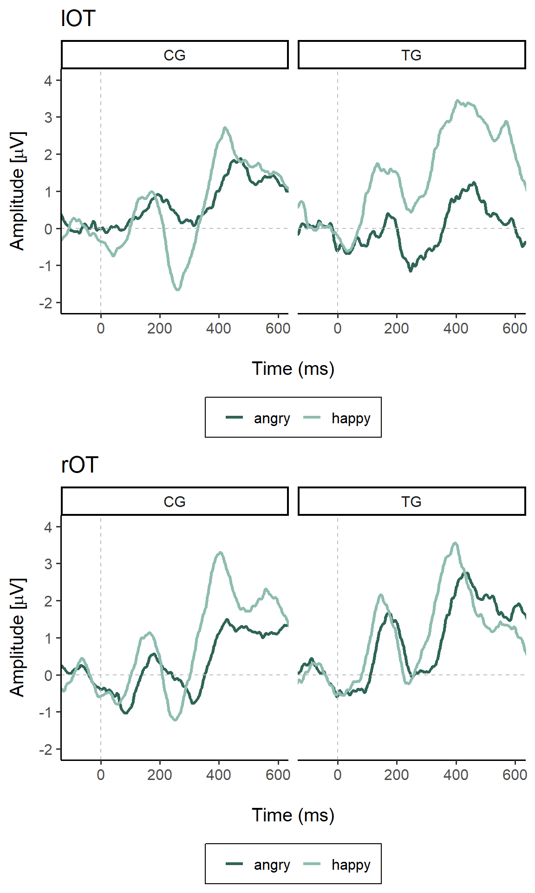
ggsave("./figures/fig_max_ERPs.png", bg = "transparent", dpi = 300)# Load data
hap_traj = read.delim("./data/max_hap_erp_traj.txt", header = TRUE, sep = " ", dec = ".")
ang_traj = read.delim("./data/max_ang_erp_traj.txt", header = TRUE, sep = " ", dec = ".")
# Add emotion condition
hap_traj$emotion = "happy"
ang_traj$emotion = "angry"
# Combine data sets
max_traj = rbind(hap_traj,ang_traj)
# Select lOT electrodes and average across electrodes
max_traj$group = qn_data$group[match(max_traj$ID,qn_data$ID,nomatch = NA)]
max_traj = subset(max_traj, select = c(ID, time, emotion, group, PO3, PO7, PO9, PO4, PO8, PO10, O1, O2, Oz))
max_traj_av = data.frame(ID=max_traj[,1], time=max_traj[,2],
emotion=max_traj[,3],
group=max_traj[,4],
lot_mean=rowMeans(max_traj[,5:7]),
rot_mean=rowMeans(max_traj[,8:10]),
mo_mean=rowMeans(max_traj[,11:13]))
max_traj_av = gather(max_traj_av, ROI, amp, lot_mean:mo_mean, factor_key=TRUE)
max_traj_ZE = subset(max_traj_av, group == "TG")
max_traj_CT = subset(max_traj_av, group == "CG")
# Plot data
max_ZE = ggplot(max_traj_ZE, aes(time, amp))+
theme(panel.background = element_blank(), panel.border = element_rect(colour = "grey", fill=NA, size=2),
axis.title.y = element_text(margin = margin(t = 0, r = 20, b = 0, l = 0)), legend.text=element_text(size=7),
legend.key = element_rect(fill = "white"))+
stat_summary(fun.y = mean, geom = "line", size = 1.2, linetype = "solid", aes(colour= emotion))+
scale_color_discrete(guide = guide_legend(override.aes = list(color = "white")))+
scale_colour_manual(values = FPVS_col)+
#theme(axis.title.x=element_blank())+ # to turn of x-axis title
#theme(axis.title.y=element_blank())+ # to turn of y-axis title
#theme(text=element_text(family="Coves", face="bold", size=18))+
labs(x = "\nTime (ms)",y = expression(paste("Amplitude [",mu,"V]")),colour = "")+
coord_cartesian(ylim=c(-2, 4),xlim=c(-100,600)) +
scale_y_continuous(breaks=seq(-2, 4, 1))+
scale_x_continuous(breaks=seq(-200,600,200))+
geom_vline(xintercept = 0, linetype = "dashed",colour="grey" )+
geom_hline(yintercept = 0, linetype = "dashed",colour="grey")+
theme_classic(base_size = 15)+
theme(legend.position ="bottom", panel.background = element_rect(fill = "transparent"),
plot.background = element_rect(fill = "transparent", color = NA),
legend.background = element_rect(fill = "transparent"), # get rid of legend bg
legend.box.background = element_rect(fill = "transparent"))+
facet_grid(~ROI)
# Plot data
max_CT = ggplot(max_traj_CT, aes(time,amp))+
theme(panel.background = element_blank(), panel.border = element_rect(colour = "grey", fill=NA, size=2),
axis.title.y = element_text(margin = margin(t = 0, r = 20, b = 0, l = 0)), legend.text=element_text(size=7),
legend.key = element_rect(fill = "white"))+
stat_summary(fun.y = mean, geom = "line", size = 1.2, linetype = "solid", aes(colour= emotion))+
scale_color_discrete(guide = guide_legend(override.aes = list(color = "white")))+
scale_colour_manual(values = FPVS_col) +
#theme(axis.title.x=element_blank())+ # to turn of x-axis title
#theme(axis.title.y=element_blank())+ # to turn of y-axis title
#theme(text=element_text(family="Coves", face="bold", size=18))+
labs(x = "\nTime (ms)",y = expression(paste("Amplitude [",mu,"V]")),colour = "")+
coord_cartesian(ylim=c(-2, 4),xlim=c(-100,600)) +
scale_y_continuous(breaks=seq(-2, 4, 1))+
scale_x_continuous(breaks=seq(-200,600,200))+
geom_vline(xintercept = 0, linetype = "dashed",colour="grey" )+
geom_hline(yintercept = 0, linetype = "dashed",colour="grey")+
theme_classic(base_size = 15)+
theme(legend.position = "bottom", panel.background = element_rect(fill = "transparent"),
plot.background = element_rect(fill = "transparent", color = NA),
legend.background = element_rect(fill = "transparent"), # get rid of legend bg
legend.box.background = element_rect(fill = "transparent"))+
facet_grid(~ROI)
# Combine plots
fig_max_ERPs_groups = cowplot::plot_grid(max_CT, max_ZE, nrow = 2, rel_heights = c(1, 1))
fig_max_ERPs_groups 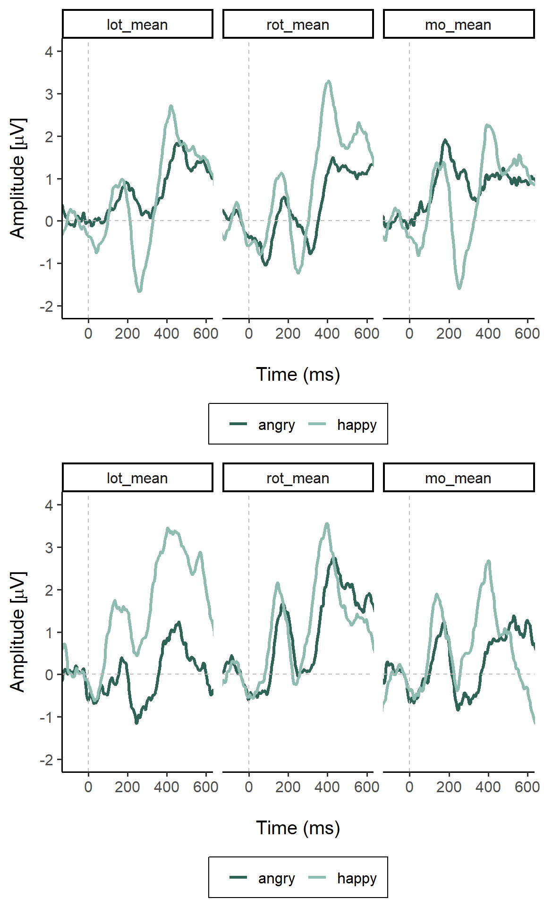
ggsave("./figures/fig_max_ERPs_groups.png", bg = "transparent", dpi = 300)# Create grandaverage to detect peaks for P1, N170, P3 max_traj_lOT_av = includes
# mean of lOT electrodes max_traj_rOT_av = includes mean of rOT electrodes
# Average across ROIs
max_ROI_av = (max_traj_lOT_av$Means + max_traj_rOT_av$Means)/2
max_grandav_ROI = data.frame(ID = max_traj_lOT_av[, 1], time = max_traj_lOT_av[,
2], emotion = max_traj_lOT_av[, 3], mean = max_ROI_av)
# Average across emotion
max_grandav_emo = aggregate(mean ~ time + ID, max_grandav_ROI, mean)
# Average across ID
max_grandav = aggregate(mean ~ time, max_grandav_emo, mean)
# Plot grand-average
ggplot(max_grandav, aes(time, mean)) + ggtitle("Grand average") + theme(panel.background = element_blank(),
panel.border = element_rect(colour = "grey", fill = NA, size = 2), axis.title.y = element_text(margin = margin(t = 0,
r = 20, b = 0, l = 0)), legend.text = element_text(size = 7), legend.key = element_rect(fill = "white")) +
stat_summary(fun.y = mean, geom = "line", size = 1, linetype = "solid") + scale_color_discrete(guide = guide_legend(override.aes = list(color = "white"))) +
labs(x = "\nTime (ms)", y = expression(paste("Amplitude [", mu, "V]")), colour = "") +
theme(legend.position = "bottom") + coord_cartesian(ylim = c(-1, 3), xlim = c(-160,
600)) + scale_y_continuous(breaks = seq(-1, 3, 1)) + scale_x_continuous(breaks = seq(-150,
600, 50)) + geom_vline(xintercept = 0, linetype = "dashed", colour = "grey") +
geom_hline(yintercept = 0, linetype = "dashed", colour = "grey")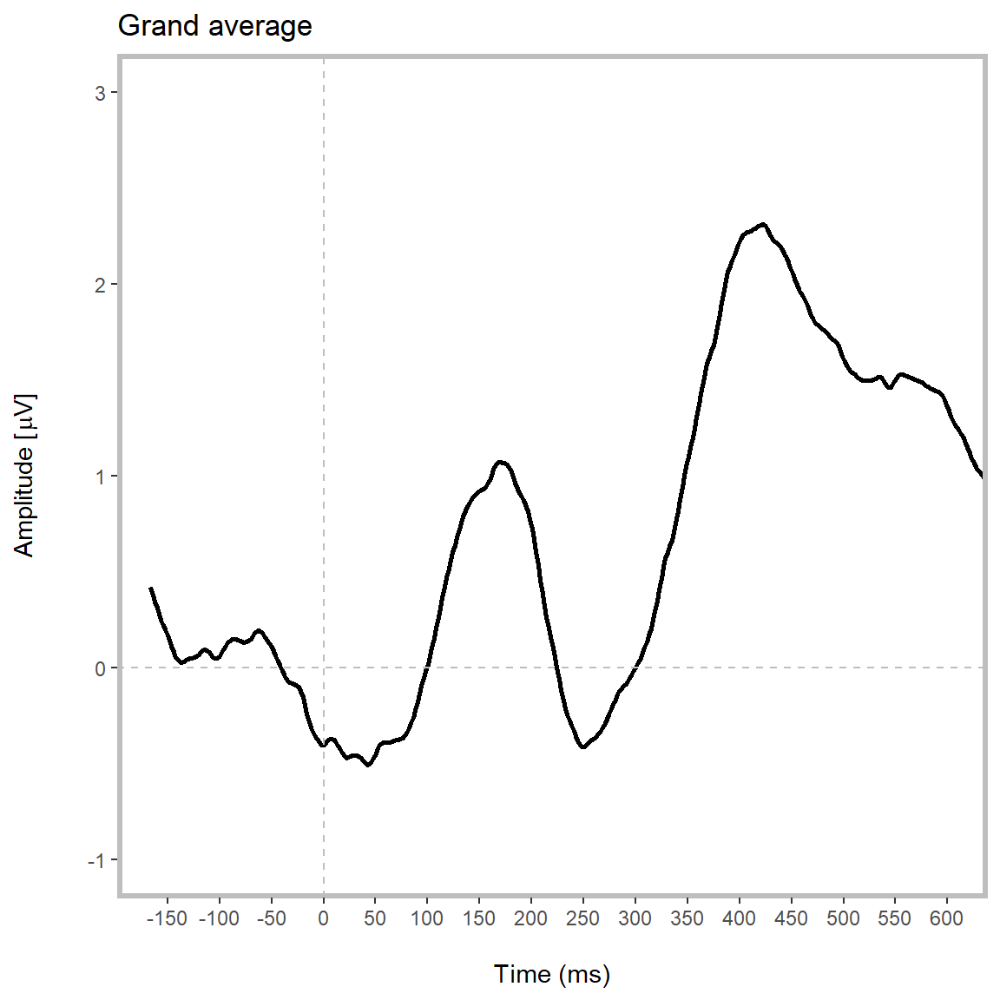
max_mean_amp_P1$group = qn_data$group[match(max_mean_amp_P1$ID, qn_data$ID, nomatch = NA)]
max_mean_amp_P1 = gather(max_mean_amp_P1, ROI, amp, lOT:rOT, factor_key = TRUE)
P1_an = aov_ez("ID", "amp", max_mean_amp_P1, between = c("group"), within = c("emotion",
"ROI"), factorize = FALSE, anova_table = list(correction = "none", es = "pes"))
pander(P1_an$anova_table)| num Df | den Df | MSE | F | pes | Pr(>F) | |
|---|---|---|---|---|---|---|
| group | 1 | 50 | 7.43 | 1.913 | 0.03684 | 0.1728 |
| emotion | 1 | 50 | 7.255 | 1.905 | 0.0367 | 0.1737 |
| group:emotion | 1 | 50 | 7.255 | 0.03136 | 0.0006268 | 0.8602 |
| ROI | 1 | 50 | 9.519 | 0.265 | 0.005272 | 0.609 |
| group:ROI | 1 | 50 | 9.519 | 0.6999 | 0.0138 | 0.4068 |
| emotion:ROI | 1 | 50 | 5.994 | 0.4199 | 0.008328 | 0.52 |
| group:emotion:ROI | 1 | 50 | 5.994 | 1.445 | 0.02809 | 0.2349 |
min_mean_amp_N170$group = qn_data$group[match(min_mean_amp_N170$ID, qn_data$ID, nomatch = NA)]
min_mean_amp_N170 = gather(min_mean_amp_N170, ROI, amp, lOT:rOT, factor_key = TRUE)
N170_an = aov_ez("ID", "amp", min_mean_amp_N170, between = c("group"), within = c("emotion",
"ROI"), factorize = TRUE, anova_table = list(correction = "none", es = "pes"))
pander(N170_an$anova_table)| num Df | den Df | MSE | F | pes | Pr(>F) | |
|---|---|---|---|---|---|---|
| group | 1 | 50 | 10.94 | 0.7661 | 0.01509 | 0.3856 |
| emotion | 1 | 50 | 15.35 | 1.164 | 0.02274 | 0.2859 |
| group:emotion | 1 | 50 | 15.35 | 4.212 | 0.0777 | 0.04538 |
| ROI | 1 | 50 | 11.54 | 0.01866 | 0.0003731 | 0.8919 |
| group:ROI | 1 | 50 | 11.54 | 0.06262 | 0.001251 | 0.8034 |
| emotion:ROI | 1 | 50 | 6.237 | 0.4492 | 0.008903 | 0.5058 |
| group:emotion:ROI | 1 | 50 | 6.237 | 4.003 | 0.07413 | 0.05085 |
library(emmeans)
# Do post-hoc test
N170_amp_ph = emmeans(N170_an, ~"group", by = "emotion")
N170_amp_ph_all_emo = print(pairs(N170_amp_ph))emotion = happy: contrast estimate SE df t.ratio p.value CG - TG -1.518 0.712 97.3 -2.133 0.0355
emotion = angry: contrast estimate SE df t.ratio p.value CG - TG 0.714 0.712 97.3 1.004 0.3181
Results are averaged over the levels of: ROI
pander(N170_amp_ph_all_emo)| contrast | emotion | estimate | SE | df | t.ratio | p.value |
|---|---|---|---|---|---|---|
| CG - TG | happy | -1.518 | 0.7116 | 97.27 | -2.133 | 0.03545 |
| CG - TG | angry | 0.7142 | 0.7116 | 97.27 | 1.004 | 0.3181 |
max_mean_amp_P3$group = qn_data$group[match(max_mean_amp_P3$ID, qn_data$ID, nomatch = NA)]
max_mean_amp_P3 = gather(max_mean_amp_P3, ROI, amp, lOT:rOT, factor_key = TRUE)
P3_an = aov_ez("ID", "amp", max_mean_amp_P3, between = c("group"), within = c("emotion",
"ROI"), factorize = TRUE, anova_table = list(correction = "none", es = "pes"))
pander(P3_an$anova_table)| num Df | den Df | MSE | F | pes | Pr(>F) | |
|---|---|---|---|---|---|---|
| group | 1 | 50 | 19.56 | 0.5438 | 0.01076 | 0.4643 |
| emotion | 1 | 50 | 7.27 | 13.73 | 0.2154 | 0.0005281 |
| group:emotion | 1 | 50 | 7.27 | 0.01318 | 0.0002636 | 0.909 |
| ROI | 1 | 50 | 7.351 | 0.7463 | 0.01471 | 0.3918 |
| group:ROI | 1 | 50 | 7.351 | 0.3017 | 0.005997 | 0.5853 |
| emotion:ROI | 1 | 50 | 4.588 | 2.408 | 0.04595 | 0.127 |
| group:emotion:ROI | 1 | 50 | 4.588 | 4.303 | 0.07924 | 0.04321 |
# Do post-hoc test
P3_amp_ph = emmeans(P3_an, ~"emotion", by = c("ROI", "group"))
P3_amp_ph_all_emo = print(pairs(P3_amp_ph))ROI = lOT, group = CG: contrast estimate SE df t.ratio p.value happy - angry 1.274 0.663 95.1 1.923 0.0575
ROI = rOT, group = CG: contrast estimate SE df t.ratio p.value happy - angry 1.585 0.663 95.1 2.391 0.0187
ROI = lOT, group = TG: contrast estimate SE df t.ratio p.value happy - angry 2.422 0.689 95.1 3.516 0.0007
ROI = rOT, group = TG: contrast estimate SE df t.ratio p.value happy - angry 0.266 0.689 95.1 0.386 0.7005
pander(P3_amp_ph_all_emo)| contrast | ROI | group | estimate | SE | df | t.ratio | p.value |
|---|---|---|---|---|---|---|---|
| happy - angry | lOT | CG | 1.274 | 0.6627 | 95.13 | 1.923 | 0.05751 |
| happy - angry | rOT | CG | 1.585 | 0.6627 | 95.13 | 2.391 | 0.01875 |
| happy - angry | lOT | TG | 2.422 | 0.6887 | 95.13 | 3.516 | 0.0006731 |
| happy - angry | rOT | TG | 0.2657 | 0.6887 | 95.13 | 0.3857 | 0.7005 |
peak_lat_P1$group = qn_data$group[match(peak_lat_P1$ID, qn_data$ID, nomatch = NA)]
P1_lat_an = aov_ez("ID", "lat", peak_lat_P1, between = c("group"), within = c("emotion",
"ROI"), factorize = FALSE, anova_table = list(correction = "none", es = "pes"))
pander(P1_lat_an$anova_table)| num Df | den Df | MSE | F | pes | Pr(>F) | |
|---|---|---|---|---|---|---|
| group | 1 | 50 | 50.01 | 1.161 | 0.0227 | 0.2864 |
| emotion | 1 | 50 | 42 | 3.835 | 0.07124 | 0.05578 |
| group:emotion | 1 | 50 | 42 | 0.79 | 0.01555 | 0.3784 |
| ROI | 1 | 50 | 53.79 | 0.3015 | 0.005994 | 0.5854 |
| group:ROI | 1 | 50 | 53.79 | 4.778e-06 | 9.556e-08 | 0.9983 |
| emotion:ROI | 1 | 50 | 33.18 | 1.958 | 0.03768 | 0.1679 |
| group:emotion:ROI | 1 | 50 | 33.18 | 3.648 | 0.068 | 0.06188 |
peak_lat_N170$group = qn_data$group[match(peak_lat_N170$ID, qn_data$ID, nomatch = NA)]
N170_lat_an = aov_ez("ID", "lat", peak_lat_N170, between = c("group"), within = c("emotion",
"ROI"), factorize = FALSE, anova_table = list(correction = "none", es = "pes"))
pander(N170_lat_an$anova_table)| num Df | den Df | MSE | F | pes | Pr(>F) | |
|---|---|---|---|---|---|---|
| group | 1 | 50 | 59.61 | 3.7 | 0.06891 | 0.06011 |
| emotion | 1 | 50 | 41.75 | 0.4094 | 0.008122 | 0.5252 |
| group:emotion | 1 | 50 | 41.75 | 3.247 | 0.06098 | 0.07757 |
| ROI | 1 | 50 | 34.1 | 0.3936 | 0.007811 | 0.5333 |
| group:ROI | 1 | 50 | 34.1 | 2.613 | 0.04967 | 0.1123 |
| emotion:ROI | 1 | 50 | 33.7 | 3.158 | 0.05941 | 0.08164 |
| group:emotion:ROI | 1 | 50 | 33.7 | 0.6557 | 0.01294 | 0.4219 |
# Load data
max_P1_amp = read.delim("./data/max_P1_singl_trials.txt", header = TRUE, sep = " ",
dec = ".")
# Recode emotion condition
max_P1_amp = max_P1_amp %>%
mutate(emotion = recode(emotion, `1` = "happy", `2` = "angry"))
max_P1_amp$emotion = factor(max_P1_amp$emotion, levels = c("happy", "angry"))
# Define effect coding contrast for emotion
contrasts(max_P1_amp$emotion) = contr.treatment(2)
# Convert ID into factor variables
max_P1_amp = max_P1_amp %>%
convert_as_factor(ID)
# Go from wide to long format
max_P1_amp = gather(max_P1_amp, elec, amp, O1:PO10, factor_key = TRUE)
max_P1_amp = max_P1_amp %>%
convert_as_factor(elec)
# Recode ROI condition
max_P1_amp$ROI = NA
max_P1_amp[max_P1_amp$elec == "PO7" | max_P1_amp$elec == "PO3" | max_P1_amp$elec ==
"PO9", ]$ROI = "lOT"
max_P1_amp[max_P1_amp$elec == "PO8" | max_P1_amp$elec == "PO4" | max_P1_amp$elec ==
"PO10", ]$ROI = "rOT"
max_P1_amp[max_P1_amp$elec == "O1" | max_P1_amp$elec == "O2" | max_P1_amp$elec ==
"Oz", ]$ROI = "MO"
# Factor ROI
max_P1_amp$ROI = factor(max_P1_amp$ROI, levels = c("MO", "lOT", "rOT"))
# Define effect coding contrast for ROI
contrasts(max_P1_amp$ROI) = contr.treatment(3, base = 1)
# Add group
max_P1_amp$group = qn_data$group[match(max_P1_amp$ID, qn_data$ID, nomatch = NA)]
# Factor group
max_P1_amp$group = factor(max_P1_amp$group, levels = c("CG", "TG"))
# Define effect coding contrast for ROI
contrasts(max_P1_amp$group) = contr.treatment(2)
# Final model
mod_maxP1_lmer1 = lmer(amp ~ group * emotion + ROI + (1 | ID), data = max_P1_amp,
control = lmerControl(calc.derivs = FALSE), REML = FALSE)
labels = c("Intercept", "CG vs. TG", "Happy vs. Angry", "MO vs. lOT", "MO vs. rOT",
"Group x Emotion")
# Create table
tab_model(mod_maxP1_lmer1, pred.labels = labels)| amp | |||
|---|---|---|---|
| Predictors | Estimates | CI | p |
| Intercept | 1.50 | 0.83 – 2.16 | <0.001 |
| CG vs. TG | 0.40 | -0.44 – 1.23 | 0.354 |
| Happy vs. Angry | -0.16 | -0.80 – 0.49 | 0.635 |
| MO vs. lOT | -0.52 | -1.09 – 0.05 | 0.075 |
| MO vs. rOT | -0.27 | -0.84 – 0.30 | 0.357 |
| Group x Emotion | -0.31 | -1.24 – 0.62 | 0.507 |
| Random Effects | |||
| σ2 | 1178.57 | ||
| τ00 ID | 0.92 | ||
| ICC | 0.00 | ||
| N ID | 52 | ||
| Observations | 83916 | ||
| Marginal R2 / Conditional R2 | 0.000 / 0.001 | ||
plot_model(mod_maxP1_lmer1, type = "pred", terms = c("group"))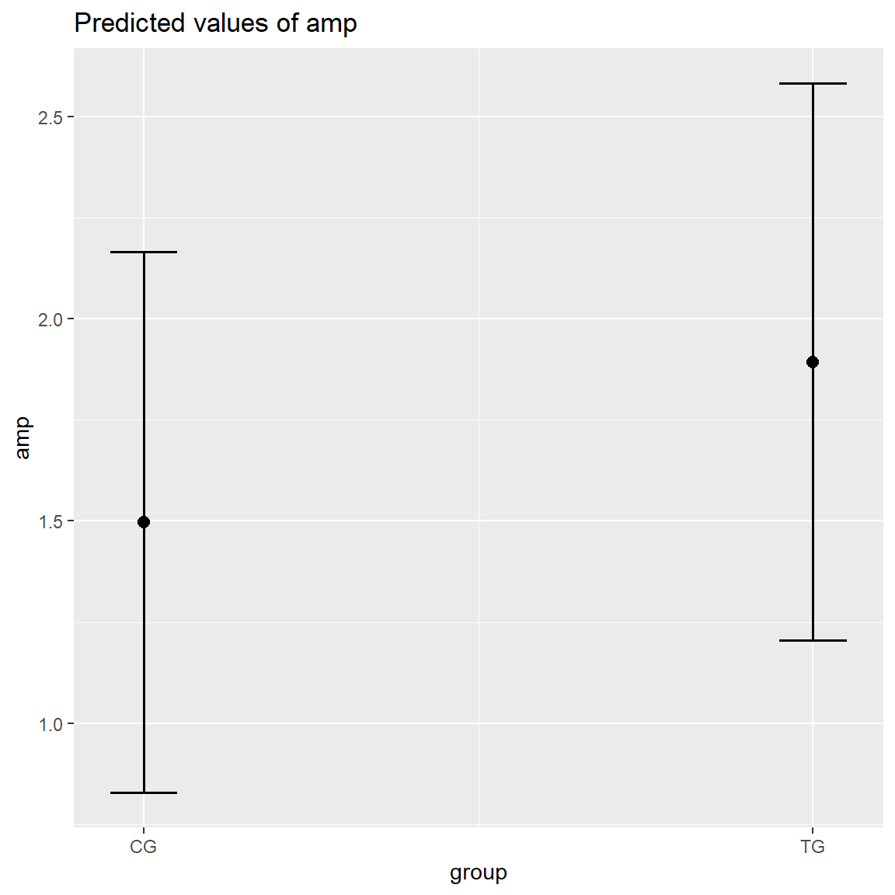
plot_model(mod_maxP1_lmer1, type = "pred", terms = c("emotion"))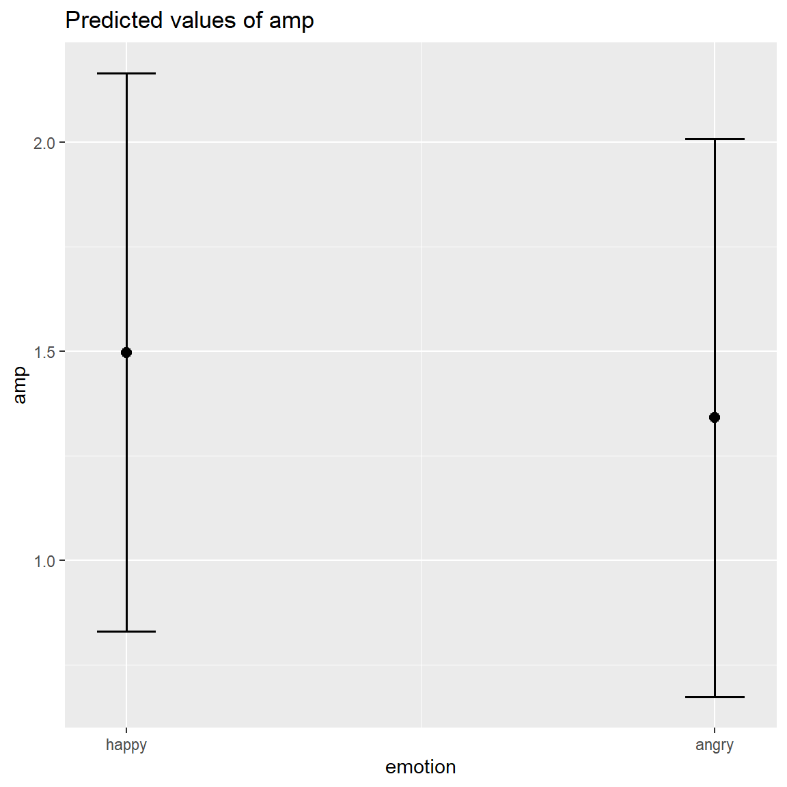
# Load data
max_N170_amp = read.delim("./data/max_N170_singl_trials.txt", header = TRUE, sep = " ",
dec = ".")
# Recode emotion condition
max_N170_amp = max_N170_amp %>%
mutate(emotion = recode(emotion, `1` = "happy", `2` = "angry"))
max_N170_amp$emotion = factor(max_N170_amp$emotion, levels = c("happy", "angry"))
# Define effect coding contrast for emotion
contrasts(max_N170_amp$emotion) = contr.treatment(2)
# Convert ID into factor variables
max_N170_amp = max_N170_amp %>%
convert_as_factor(ID)
# Go from wide to long format
max_N170_amp = gather(max_N170_amp, elec, amp, O1:PO10, factor_key = TRUE)
max_N170_amp = max_N170_amp %>%
convert_as_factor(elec)
# Recode ROI condition
max_N170_amp$ROI = NA
max_N170_amp[max_N170_amp$elec == "PO7" | max_N170_amp$elec == "PO3" | max_N170_amp$elec ==
"PO9", ]$ROI = "lOT"
max_N170_amp[max_N170_amp$elec == "PO8" | max_N170_amp$elec == "PO4" | max_N170_amp$elec ==
"PO10", ]$ROI = "rOT"
max_N170_amp[max_P1_amp$elec == "O1" | max_N170_amp$elec == "O2" | max_N170_amp$elec ==
"Oz", ]$ROI = "MO"
# Factor ROI
max_N170_amp$ROI = factor(max_N170_amp$ROI, levels = c("MO", "lOT", "rOT"))
# Define effect coding contrast for ROI
contrasts(max_N170_amp$ROI) = contr.treatment(3, base = 1)
# Add group
max_N170_amp$group = qn_data$group[match(max_N170_amp$ID, qn_data$ID, nomatch = NA)]
# Factor group
max_N170_amp$group = factor(max_N170_amp$group, levels = c("CG", "TG"))
# Define effect coding contrast for ROI
contrasts(max_N170_amp$group) = contr.treatment(2)
# Final model
mod_maxN170_lmer1 = lmer(amp ~ group * emotion + ROI + (1 | ID), data = max_N170_amp,
control = lmerControl(calc.derivs = FALSE), REML = FALSE)
labels = c("Intercept", "CG vs. TG", "Happy vs. Angry", "MO vs. lOT", "MO vs. rOT",
"Group x Emotion")
# Create table
tab_model(mod_maxN170_lmer1, pred.labels = labels)| amp | |||
|---|---|---|---|
| Predictors | Estimates | CI | p |
| Intercept | -1.62 | -2.43 – -0.81 | <0.001 |
| CG vs. TG | 1.46 | 0.44 – 2.48 | 0.005 |
| Happy vs. Angry | 2.06 | 1.29 – 2.82 | <0.001 |
| MO vs. lOT | -0.01 | -0.68 – 0.67 | 0.986 |
| MO vs. rOT | -0.01 | -0.69 – 0.66 | 0.970 |
| Group x Emotion | -2.56 | -3.67 – -1.46 | <0.001 |
| Random Effects | |||
| σ2 | 1662.28 | ||
| τ00 ID | 1.47 | ||
| ICC | 0.00 | ||
| N ID | 52 | ||
| Observations | 83916 | ||
| Marginal R2 / Conditional R2 | 0.000 / 0.001 | ||
# Load data
max_P3_amp = read.delim("./data/max_P3_singl_trials.txt", header = TRUE, sep = " ",
dec = ".")
# Recode emotion condition
max_P3_amp = max_P3_amp %>%
mutate(emotion = recode(emotion, `1` = "happy", `2` = "angry"))
max_P3_amp$emotion = factor(max_P3_amp$emotion, levels = c("happy", "angry"))
# Define effect coding contrast for emotion
contrasts(max_P3_amp$emotion) = contr.treatment(2)
# Convert ID into factor variables
max_P3_amp = max_P3_amp %>%
convert_as_factor(ID)
# Go from wide to long format
max_P3_amp = gather(max_P3_amp, elec, amp, O1:PO10, factor_key = TRUE)
max_P3_amp = max_P3_amp %>%
convert_as_factor(elec)
# Recode ROI condition
max_P3_amp$ROI = NA
max_P3_amp[max_P3_amp$elec == "PO7" | max_P3_amp$elec == "PO3" | max_P3_amp$elec ==
"PO9", ]$ROI = "lOT"
max_P3_amp[max_P3_amp$elec == "PO8" | max_P3_amp$elec == "PO4" | max_P3_amp$elec ==
"PO10", ]$ROI = "rOT"
max_P3_amp[max_P3_amp$elec == "O1" | max_P3_amp$elec == "O2" | max_P3_amp$elec ==
"Oz", ]$ROI = "MO"
# Factor ROI
max_P3_amp$ROI = factor(max_P3_amp$ROI, levels = c("MO", "lOT", "rOT"))
# Define effect coding contrast for ROI
contrasts(max_P3_amp$ROI) = contr.treatment(3, base = 1)
# Add group
max_P3_amp$group = qn_data$group[match(max_P3_amp$ID, qn_data$ID, nomatch = NA)]
# Factor group
max_P3_amp$group = factor(max_P3_amp$group, levels = c("CG", "TG"))
# Define effect coding contrast for ROI
contrasts(max_P3_amp$group) = contr.treatment(2)
# Final model
mod_maxP3_lmer1 = lmer(amp ~ group * emotion + ROI + (1 | ID), data = max_P3_amp,
control = lmerControl(calc.derivs = FALSE), REML = FALSE)
labels = c("Intercept", "CG vs. TG", "Happy vs. Angry", "MO vs. lOT", "MO vs. rOT",
"Group x Emotion")
# Create table
tab_model(mod_maxP3_lmer1, pred.labels = labels)| amp | |||
|---|---|---|---|
| Predictors | Estimates | CI | p |
| Intercept | 0.31 | -0.60 – 1.21 | 0.508 |
| CG vs. TG | 1.34 | 0.17 – 2.51 | 0.025 |
| Happy vs. Angry | -0.33 | -1.11 – 0.46 | 0.414 |
| MO vs. lOT | 0.08 | -0.61 – 0.78 | 0.819 |
| MO vs. rOT | 0.37 | -0.33 – 1.06 | 0.302 |
| Group x Emotion | -1.62 | -2.76 – -0.48 | 0.005 |
| Random Effects | |||
| σ2 | 1760.46 | ||
| τ00 ID | 2.43 | ||
| ICC | 0.00 | ||
| N ID | 52 | ||
| Observations | 83916 | ||
| Marginal R2 / Conditional R2 | 0.000 / 0.002 | ||
plot_model(mod_maxP3_lmer1, type = "pred", terms = c("group"))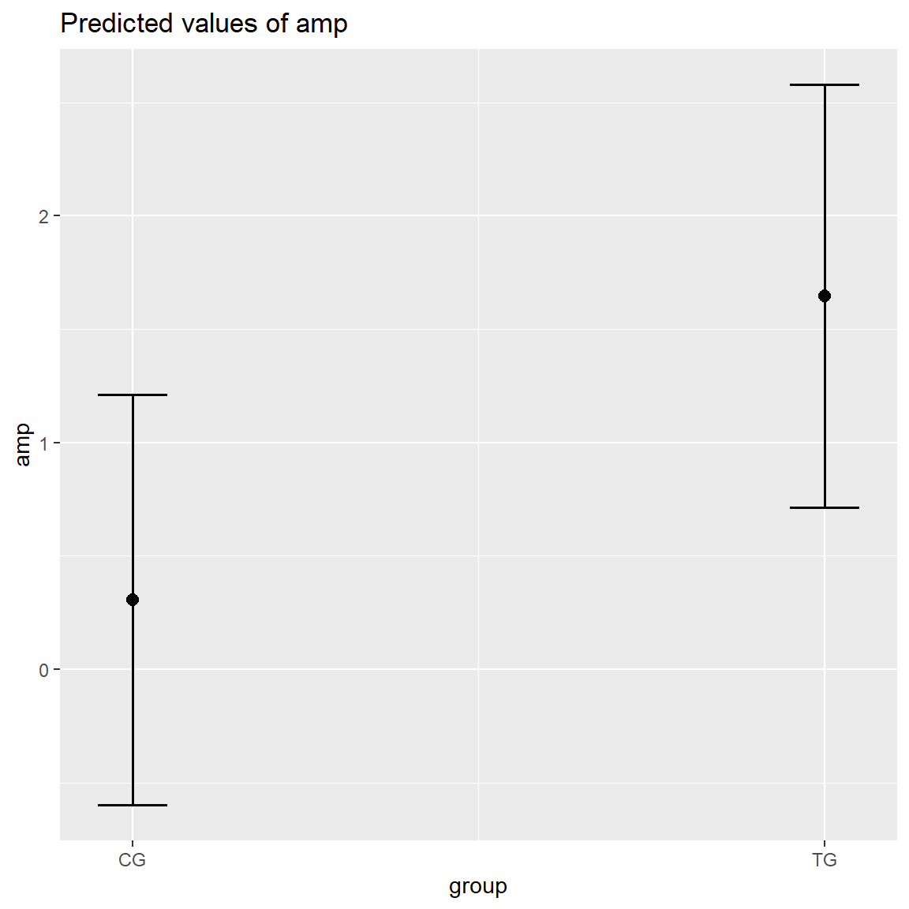
plot_model(mod_maxP3_lmer1, type = "pred", terms = c("emotion"))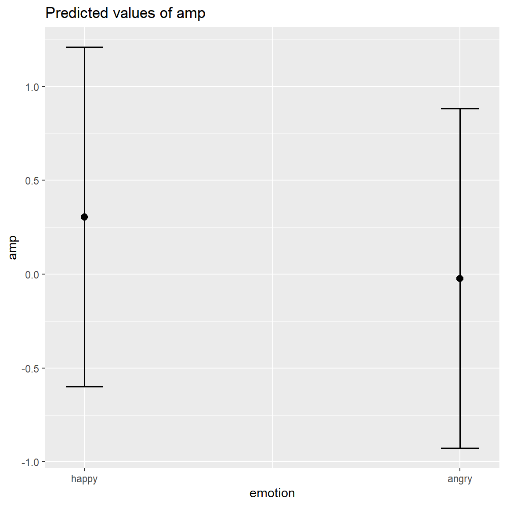
max_P3_amp$interaction = interaction(max_P3_amp$group, max_P3_amp$emotion)
mod_P3_ph = lmer(amp ~ interaction + ROI + (1 | ID), data = max_P3_amp, control = lmerControl(calc.derivs = FALSE))
library(multcomp)
# Select contrasts of interest
mod_P3_posthoc = summary(glht(mod_P3_ph, linfct = mcp(interaction = "Tukey")))
# mod_P3_posthoc = summary(glht(mod_P3_ph, linfct=mcp(interaction= c('CG.angry -
# TG.angry = 0', 'CG.angry - TG.happy = 0', 'CG.happy - TG.happy = 0', 'TG.angry
# - CG.happy = 0' )),test = adjusted(type = 'fdr')))
# Get ready for presentation in RMarkdown
tab1 = merge(as.data.frame(mod_P3_posthoc$test$coefficients), as.data.frame(mod_P3_posthoc$test$sigma),
by = 0)
tab2 = as.data.frame(mod_P3_posthoc$test$pvalues)
rownames(tab2) = rownames(as.data.frame(mod_P3_posthoc$test$tstat))
tab2 = merge(as.data.frame(mod_P3_posthoc$test$tstat), tab2, by = 0)
mod_P3_ph_test = merge(tab1, tab2, by = "Row.names")
colnames(mod_P3_ph_test) = c("Contrast", "Est.", "Std. Error", "z value", "p value")
# Create table
kable(mod_P3_ph_test) %>%
kable_styling(bootstrap_options = c("hover"), font_size = 14, fixed_thead = T)| Contrast | Est. | Std. Error | z value | p value |
|---|---|---|---|---|
| CG.angry - CG.happy | -0.3277796 | 0.4013318 | -0.8167297 | 0.8388067 |
| CG.angry - TG.happy | -1.6676137 | 0.6049293 | -2.7567082 | 0.0275236 |
| TG.angry - CG.angry | -0.2794254 | 0.6061946 | -0.4609501 | 0.9655288 |
| TG.angry - CG.happy | -0.6072050 | 0.6061394 | -1.0017580 | 0.7371100 |
| TG.angry - TG.happy | -1.9470391 | 0.4188231 | -4.6488339 | 0.0000144 |
| TG.happy - CG.happy | 1.3398340 | 0.6048741 | 2.2150627 | 0.1119276 |